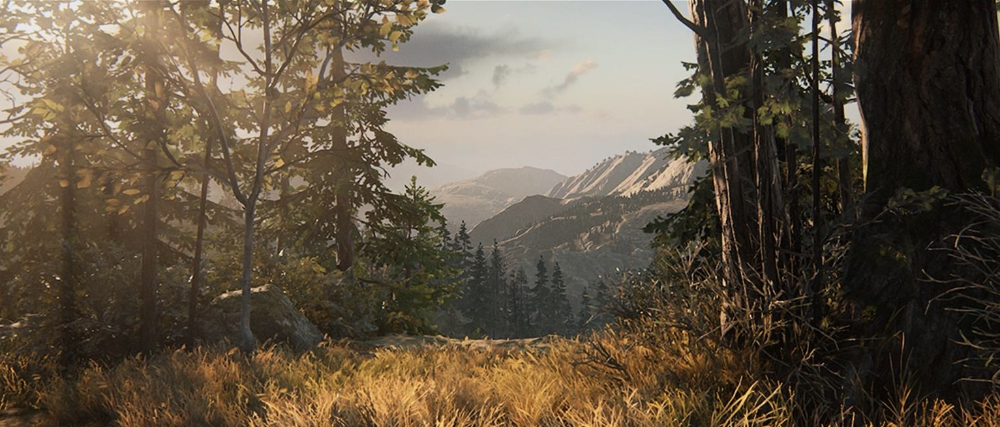
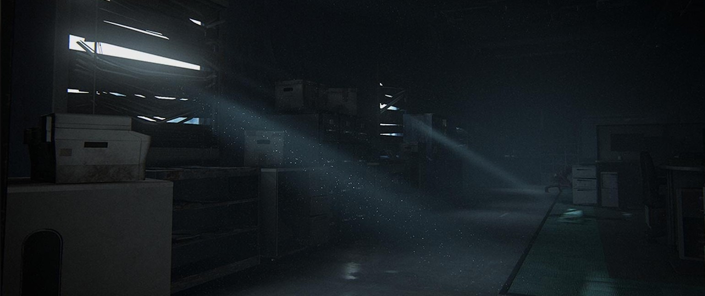
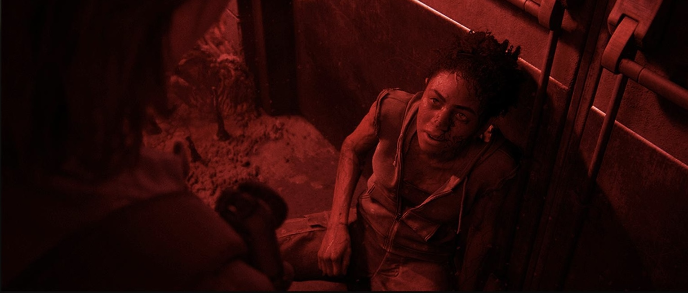
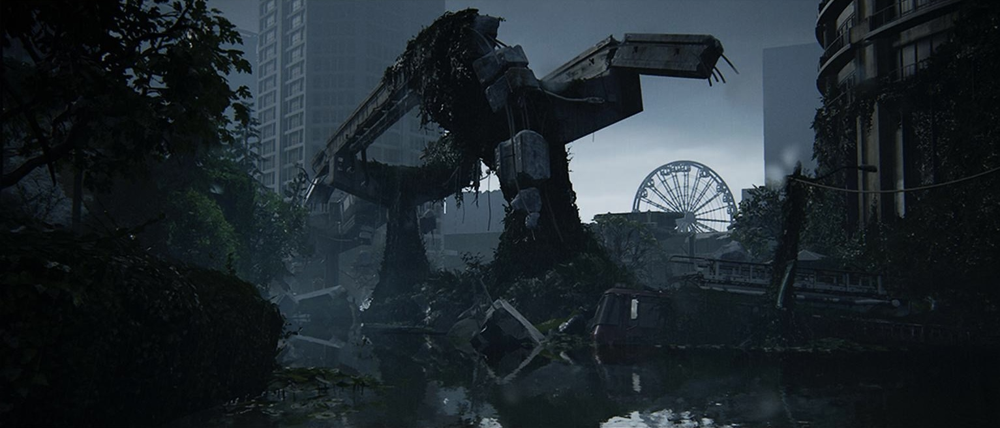
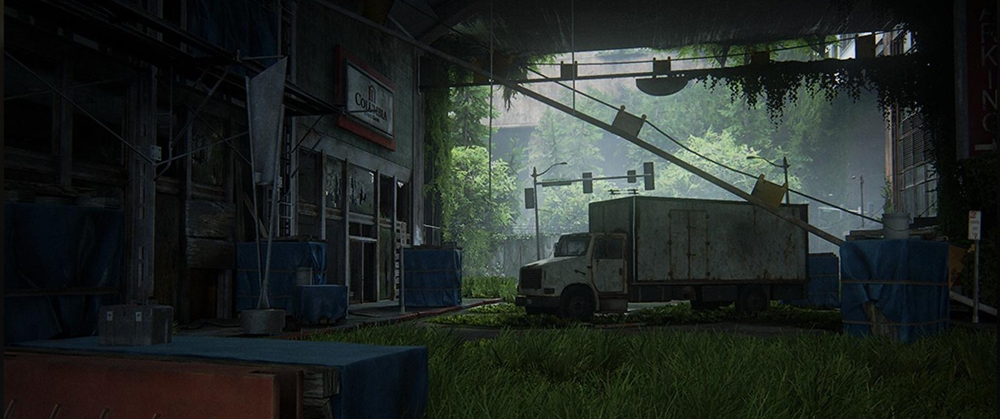
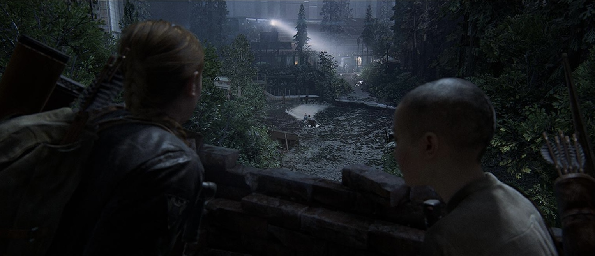
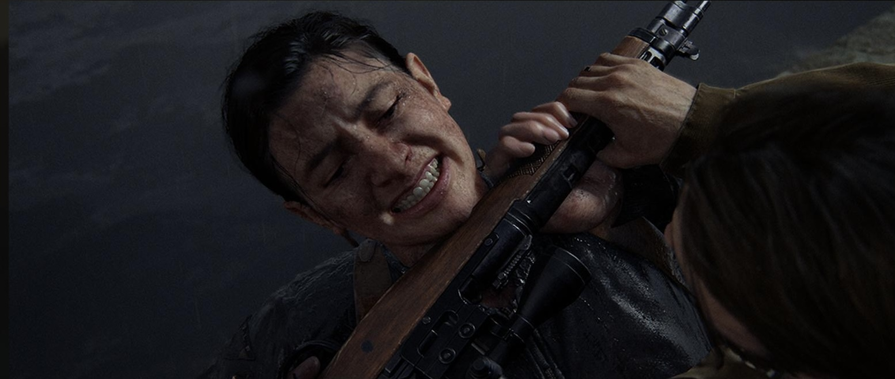
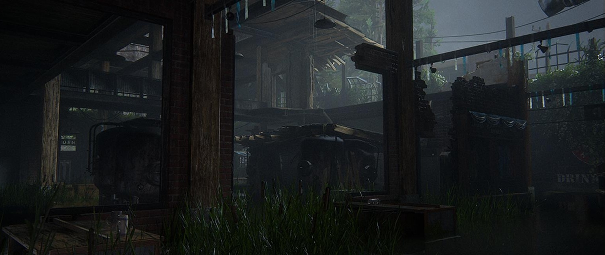
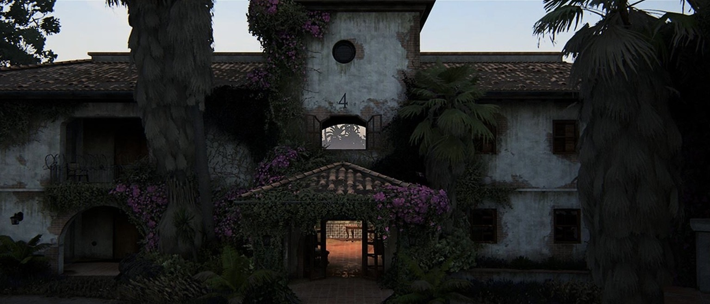
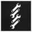

The Last of Us Part II
Sony Interactive Entertainment
Original Release June 19, 2020
Release January 19, 2024
Developed by Naughty Dog LLC.

Blood and Gore
Intense Violence
Nudity
Sexual Content
Strong Language
Use of Drugs
Five years after their dangerous journey across the post-pandemic United States, Ellie and Joel have settled down in Jackson, Wyoming. Living amongst a thriving community of survivors has allowed them peace and stability, despite the constant threat of the infected and other, more desperate survivors. When a violent event disrupts that peace, Ellie embarks on a relentless journey to carry out justice and find closure.
Full Guide and Platinum Trophy Walkthrough for The Last of Us Part II Video Game. This guide can also help with previous versions of the game.
Playing the game in this order is merely just suggested; I do not force you to play in this order, but it is highly recommended.
This guide is compiled into chapters in accordance with pivotal moments in the storyline of The Last of Us Part II.
Please note that a New Game+ Playthrough or Multiple Encounter Replays may be required in order to obtain the Platinum Trophy. Also note that Parts and Supplements are more scarce on moderate difficulty or higher, so when you are playing the game yourself, some parts and supplements won't show up in the areas that are discussed in this guide. You can find all parts and supplements on moderate or lower difficulties.
 Spoiler Warning: Plot details, ending details, or both are in the text and images which follows
Spoiler Warning: Plot details, ending details, or both are in the text and images which follows
| Chapter | Collectibles | Artifacts | Trading Cards | Coins | Journal Entries | Workbenches | Safes | |
|---|---|---|---|---|---|---|---|---|
| Jackson | 17 | 9 | 4 | 1 | 1 | 1 | ||
| Seattle Day 1 | 75 | 45 | 24 | 6 | 4 | 4 | ||
| Seattle Day 2 | 35 | 18 | 12 | 5 | 4 | 3 | ||
| Seattle Day 3 | 18 | 9 | 6 | 3 | 4 | 1 | ||
| The Park |  | 4 | 3 | 1 | ||||
| Seattle Day 1 | 34 | 18 | 16 | 5 | 3 | |||
| Seattle Day 2 | 23 | 14 | 9 | 3 | 2 | |||
| Seattle Day 3 | 11 | 5 | 6 | 2 | ||||
| The Farm | ||||||||
| Santa Barbara | 10 | 6 | 2 | 2 | 2 | |||
| The Farm | ||||||||
| 227 | 127 | 48 | 32 | 17 | 25 | 14 | ||
| Achievements and Trophies |
| Chapter | Collectibles | Artifacts | Trading Cards | Journal Entries | Workbenches | Safes | Coins | |
|---|---|---|---|---|---|---|---|---|
| Prologue | ||||||||
| Waking Up | 3 | 1 | 2 | |||||
| The Overlook | 1 | 1 | ||||||
| Patrol | 10 | 6 | 2 | 2 | 1 | 1 | ||
| The Horde | ||||||||
| The Chalet | ||||||||
| Packing Up | 3 | 1 | 2 | |||||
| 17 | 9 | 4 | 4 | 1 | 1 |
Cinematic
I saved her
Go to Jackson
Cinematic
I'll take it to the grave if I have to
Cinematic
Our Future Days
4 Years Later
Cinematic
I heard you had quite a night after I left
Follow Jesse
Trading Card 1 / 2
Seismicayla
Follow Jesse onto the wooden terrace and continue around the blue building. The trading card is hanging on a bulletin board before the stairs.
Parts
x7
Go to the lumber truck in front of the Tipsy Bison. There are parts on the small bench in front of the Blacksmith.
Artifact 1 / 1
Volunteer Receipt
Go to the lumber truck in front of the Tipsy Bison. The volunteer request is to the right, under the blue awning next to the Blacksmith.
Cinematic
I'm trying to say I'm sorry
Follow Maria
Trading Card 2 / 2
The Keene Twins
In the Tipsy Bison, the trading card is on a barrel to the right of the bar next to the dartboard.
Parts
x3
After the cutscene, exit the Tipsy Bison and turn right towards the library and go to the scaffolding to find some parts on top of a crate in the corner.
Parts
x7
After the cutscene, exit the Tipsy Bison and go to the end of the road to find some parts on top of a wooden pallet, where a squirrel sits in the snow.
Cinematic
You know what I love about you?
Follow Dina
Cinematic
You run into anything you can't hande, you come back
Cinematic
Where have you been?
Follow the Man
Cinematic
Wanted you to see it first
Go to the outpost
Artifact 1 / 1
Seth's Note
After exiting the house, climb through a window to re-enter the residence. Seth's note is on the desk in the office.
Follow Dina and complete your patrol duties
Journal Entry 1 / 2
After speaking with Dina on the balcony, step back from the railing. A journal entry prompt will appear.
Parts
x5
After climbing the rope, open the door on the right to enter a small office. There are parts on top of a blue cabinet and inside of it.
Parts
x8
Follow Dina on your horse until you reach a street with an abandoned RV in the middle. Enter the RV to find some parts in the corner and inside the drawer, and also inside a drawer next to a sink.
Supplements
 x7
x7
Inside the RV, there is a bottle of supplements on top of the bed.
Artifact 1 / 6
A Note to Santa
Go into the dilapidated house near the toppled basketball hoop. Climb onto the stairs platform and hop up the ledge to enter the second-floor bedroom. The note is inside the drawer of the nightstand next to the bed.
Supplements
 x2
x2
Inside the same house, check the bathroom to find 2 pills on top of the sink.
Trading Card 1 / 2
Tesseracter
Climb atop the snowboard pickup truck by the "Open House" sign and enter the abandoned house through the second floor. The trading card is on a shelf in the closet.
Supplements
 x2
x2
Inside the same house, check the nightstand next to the bed to find two pills.
Supplements
 x7
x7
In front of the Green Palace Market, climb over the open window on the left and kill the runner. Climb the other window then climb into the bathroom from the outside to find some pills and a bottle of supplements in the sink.
Parts
x4
After getting jumped by the runner inside the store, turn right to check 1 part on top of a metal table. There are 3 extra inside the drawer next to the printer.
Parts
x7
After getting jumped by the runner under the truck, immediately turn around and climb into the truck to find parts sitting on the floor in the corner.
Artifact 2 / 6
Supermarket Apology
Walk up the ramp and enter the loading dock through the side door. Head inside the truck trailer and squeeze through the stack of boxes. The apology note is atop a box near the floor.
Supplements
 x8
x8
There are supplements right next to the previous artifact.
 Health Kit Recipe
Health Kit Recipe
Approach the television stand at the far end of the conference room. Search the cabinet to find ingredients for a Medkit.
Parts
x3
When you enter the spore-infested area, turn left into the other room to find a part on the table in front of you and two more on the other table.
Artifact 3 / 6
Good Boy Combo
Open the door to the office and walk over to the safe. The security note is on the table near the coffee maker.
Safe 1 / 1
Safe (07-20-13)
Supplements
 x14
x14
Parts
x12
Go back to the break room and look for the picture of the dog on the Employee of the Month board. The date above the picture is the code to the safe. Return to the office and open the safe to find parts and supplements.
Supplements
 x8
x8
From the office with the safe, turn around and turn right into the break room to find a bottle of supplements inside the open locker.
Molotov Recipe
Walk over to Dina and grab the Molotov from her.
Supplements
 x27
x27
Inside the room where Dina gave you the molotov, check all of the shelves and tables around the room to find supplements scattered all over.
Encounter
Supermarket
Parts
x24
Smash the window to the library office, then check the table in front of you to find 19 parts and 5 extra on the other table.
Artifact 4 / 6
Eugene’s Firefly Pendant
Smash the window to the library office, go inside and open the door on the opposite side of the room. The firefly pendant is on the corkboard next to the door.
Journal Entry 2 / 2
Enter the daycare and approach the shelf immediately to the right of the door. The journal entry prompt is located by the toy giraffe.
Trading Card 2 / 2
Laurent Foucalt, CEO SPARK
Walk past the desk piled with rubbish and enter the closet. The trading card is on the table.
Artifact 5 / 6
Photo of Eugene and Tommy
The old photo of Tommy and Eugene is on the desk directly across from the bed.
Parts
x7
There are parts inside the desk drawer below the artifact.
Artifact 6 / 6
Eugene’s Ultimatum
Walk over to the nightstand next to the bed. The note is inside the drawer.
Workbench 1 / 1
 Workbench
Workbench
After starting the generator, use the workvvench at the other end of the hallway to upgrade your weapons.
Cinematic
Can I ask you a question?
Look for the Patrol
Cinematic
We're going to have to run
Escape with Joel & Tommy
Encounter
Gondola Station
Cinematic
You ride with me, c'mon
Cinematic
 Wait, how did you get the scar?
Wait, how did you get the scar?
Cinematic
Y'all act like you've heard of us or something
Look for Joel & Tommy
Cinematic
End it
Cinematic
You can't talk me out of this
Go to Joel's house and look for what you need
Journal Entry 1 / 2
Go to Joel's kitchen and walk over to the sink. Investigate Joel's mug and jot down a journal entry.
Journal Entry 2 / 2
Go upstairs and enter Joel's workshop. The journal entry prompt is by the guitar on the table.
Artifact 1 / 1
Joel's Watch
Go into Joel's bedroom. His watch is inside the shoebox on top of the bed.
Cinematic
Get going, you're losing light
| Chapter | Collectibles | Artifacts | Trading Cards | Journal Entries | Workbenches | Safes | Coins | |
|---|---|---|---|---|---|---|---|---|
| The Gate | 11 | 6 | 4 | 1 | ||||
| Downtown | 25 | 18 | 5 | 2 | 1 | 3 | ||
| Eastbrook Elementary | 4 | 3 | 1 | |||||
| Capitol Hill | 13 | 7 | 6 | 2 | 1 | |||
| Channel 13 | 2 | 1 | 1 | |||||
| The Tunnels | 9 | 5 | 3 | 1 | 1 | |||
| The Theater | 6 | 4 | 2 | |||||
| The Birthday Gift | 5 | 1 | 2 | 2 | ||||
| 75 | 45 | 24 | 6 | 4 | 4 |
Go into Seattle
Trading Card 1 / 4
Motivator
The trading card is hanging in the bus stop shelter next to the first group of cars you see in the forest.
Starter Set 
Trading Card 2 / 4
The Starfire Kids
Enter the abandoned FEDRA trailer off the left side of the freeway. The trading card is hanging on the bulletin board inside.
Artifact 1 / 6
Map of Seattle
Inside the trailer, proceed into the room past the bulletin board and open the filing cabinet to the left to find a map of Seattle.
Find a way past the wall
Journal Entry 1 / 1
Go to the Seattle QZ gate. A journal entry prompt is located where the WLF graffiti reads "Tresspassers killed on sight!"
Artifact 2 / 6
Refugee Note
Approach the gate into Seattle, then head into the first abandoned FEDRA trailer on the left. The note is on the table inside.
Artifact 3 / 6
Infected infographic
Approach the gate into Seattle, then head into the second trailer through the fence to the left. The infographic is on the table inside.
Parts
x7
Approach the gate into Seattle, then climb the truck furthest on the left parked in the corner to find some parts sitting on top of a blue crate.
Parts
x3
Approach the gate into Seattle, then go inside the caged area then turn right and go to the corner to find a small guard station. There are parts on the ledge of it.
Find a way to open the gate
Trading Card 3 / 4
Chessmaster
Follow the walkway into the watchtower. Climb the ladder next to the entryway. The trading card is on a table at the top.
Artifact 4 / 6
Isaac's Orders
Follow the walkway into the watchtower. Climb the ladder next to the entryway to find a note on a box at the top, next to the trading card.
Parts
x5
Follow the walkway into the watchtower. Climb the ladder next to the entryway to find parts next to the trading card.
Artifact 5 / 6
Checkpoint Gate Codes
Break the window into the trailer ahead. Climb inside and grab the checkpoint gate codes from the filing cabinet beside the computer monitor.
Trading Card 4 / 4
Oozer
After starting the generator, toss the nearby power cord over the trailer. Go to the other side, then use the cable to cllimb to the top of the trailer. The trading card is next to the lawn chair on the roof.
Artifact 6 / 6
Rooftop Note
After starting the generator, toss the nearby power cord over the trailer. Go to the other side, then use the cable to cllimb to the top of the trailer. Grab the alcohol on the lawn chair to reveal the note.
Parts
x4
After starting the generator, toss the nearby power cord over the trailer. Go to the other side, then use the cable to cllimb to the top of the trailer. There are parts next to the lawn chair on the roof.
Supplements
 x13
x13
After starting the generator, toss the nearby power cord over the trailer. Go to the other side, then use the cable to cllimb to the top of the trailer. There is a bottle of supplements on the lawn chair and another bottle next to it as well.
Parts
x12
After entering the checkpoint gate codes, break the window behind you to climb to the back and climb up the watchtower to find some parts.
Supplements
 x17
x17
After entering the checkpoint gate codes, break the window behind you to climb to the back and climb up the watchtower to find some supplements.
Go to Gate East 2
Artifact 1 / 18
FEDRA Census Document
Facing Gate East 2 (the gate marked with profane graffiti), go left into the guard box. Open the drawer inside to find the document.
Find Gas at the Dome or Courthouse to open Gate East 2
Stun Bomb Recipe
Go to the front of the synagogue on 5th AVE between Marion ST and Columbia ST. Go through the front gate, then climb the ladder on the right. The stun bomb is in the first guard box on the right.
Encounter
Synagogue Exterior
Parts
x10
Enter the synagogue on 5th AVE between Marion ST and Columbia ST. Cut through the backlot and enter through the broken window. On the ground floor, go towards the shelves on the right to find 5 parts. Go through the doorway to find 2 extra on top of the table. There are 3 extra parts on top of the other table nearby.
Artifact 2 / 18
Emergency Protocols Memo
Enter the synagogue on 5th AVE between Marion ST and Columbia ST. Cut through the backlot and enter through the broken window. After obtaining the fuel can, move the cart against the high metal cabinet to reach the balcony. The memo is on the left table.
Parts
x11
Enter the synagogue on 5th AVE between Marion ST and Columbia ST. Cut through the backlot and enter through the broken window. After obtaining the fuel can, move the cart against the high metal cabinet to reach the balcony. The parts are on top of the left table, right next to the memo.
Supplements
 x8
x8
Enter the synagogue on 5th AVE between Marion ST and Columbia ST. Use the cart to reach the balcony then swing to the other balcony. Enter the office on the right. Once inside, there is a bottle of supplements on top of the desk.
Artifact 3 / 18
Rabbi Sauders' Letter
Journal Entry 1 / 2
Enter the synagogue on 5th AVE between Marion ST and Columbia ST. Use the cart to reach the balcony then swing to the other balcony. Enter the office on the right. Once inside, take the letter inside the desk drawer and put it away. Ellie will add the poem to the journal after a conversation.
Encounter
Courtroom
Supplements
 x11
x11
Enter the courthouse through the window at Madison ST and 6th AVE. In the second room ahead, there are 11 supplements on top of the desk on the left.
Parts
x8
Enter the courthouse through the window at Madison ST and 6th AVE. Clear out the infected inside, then go down the stairs. Look to the right to find parts sitting on top of a blue box.
Artifact 4 / 18
Plea to a Friend
Enter the courthouse through the window at Madison ST and 6th AVE. Clear out the infected inside, then go down the stairs. The note is near the back wall next to three bodies.
Training Manual
Crafting Training Manual
Enter the courthouse through the window at Madison ST and 6th AVE. Clear out the infected inside, then go down the stairs. Break the windows to enter the back office. The manual is on the first bookshelf on the left.
Artifact 5 / 18
Lt. Torres' Final Memorandum
Enter the courthouse through the window at Madison ST and 6th AVE. Clear out the infected inside, then go down the stairs. Break the windows to enter the back office. Pull out the machete from the impaled corpse inside. The memorandum will fall out of the corpse.
Artifact 6 / 18
List of Known WLF Agitators
Enter the courthouse through the window at Madison ST and 6th AVE. Clear out the infected inside, then go down the stairs. Break the windows to enter the back office. The list is in a drawer in the corner.
Parts
x3
Enter the courthouse through the window at Madison ST and 6th AVE. Clear out the infected inside, then go down the stairs. Break the windows to enter the back office. The parts are under the desk next to the drawer in the corner.
Safe 1 / 3
Safe (88-07-22)
Parts
x7
Supplements
 x19
x19
Enter the courthouse through the window at Madison ST and 6th AVE. Clear out the infected inside, then go down the stairs. Break the windows to enter the back office. Look under the desk to find the safe. The code is written on the whiteboard.
Encounter
Courthouse Garage
Explore Downtown Seattle
Artifact 7 / 18
Cache Hunter Note
Go to Columbia ST and 6th AVE. Look for a small metal overhang protruding from a grassy hill. The note is in a satchel by a lone skeleton.
Encounter
Bank
Artifact 8 / 18
Bank Heist Plans
Go to Cherry ST and 6th AVE. Take the underground entrance into the bank. Clear out the infected inside, then go to the vault room at the back of the bank. The plans are in the satchel.
Safe 2 / 3
Safe (60-23-06)
Go to Cherry ST and 6th AVE. Take the underground entrance into the bank. Clear out the infected inside, then go to the vault room at the back of the bank. Read the plans in the satchel to get the code then open the vault.
Pump Shotgun
Go to Cherry ST and 6th AVE. Take the underground entrance into the bank. Clear out the infected inside, then go to the vault room at the back of the bank. Read the plans in the satchel to get the code then open the vault. The skeleton inside is holding the shotgun.
Artifact 9 / 18
Bank Robber Letter
Go to Cherry ST and 6th AVE. Take the underground entrance into the bank. Clear out the infected inside, then go to the vault room at the back of the bank. Read the plans in the satchel to get the code then open the vault. The note is on the central table inside.
Artifact 10 / 18
Antique Ring
Go to Cherry ST and 6th AVE. Take the underground entrance into the bank. Clear out the infected inside, then go to the vault room at the back of the bank. Read the plans in the satchel to get the code then open the vault. The ring is inside a deposit box in the back right corner.
So Great and Small
Artifact 11 / 18
Letter from Isaac
Go to the tank at Cherry ST and 5th AVE. The letter is in a nearby satchel closer to the building.
Parts
x16
Supplements
 x10
x10
Go to the highway at Marion ST and 6th AVE, then jump over to the gihhway with the fire truck. Use the nearby rope/hose to rappel down and swing onto the collapsed highway. There are parts and supplements inside the truck container.
Trading Card 1 / 5
Doctor Uckmann
Go to the ruined building frame on Marion ST and 6th AVE. Go up the stairs and break the windows. Leap across the perimeter ledges and climb to the top of the building frame. The trading card is in the left drawer.
Parts
x7
Go to the ruined building frame on Marion ST and 6th AVE. Go up the stairs and break the windows. Leap across the perimeter ledges and climb to the top of the building frame. There are parts on top of the desk and inside the left drawer next to the trading card.
Supplements
 x18
x18
Go to the ruined building frame on Marion ST and 6th AVE. Go up the stairs and break the windows. Leap across the perimeter ledges and climb to the top of the building frame. There is a bottle of supplements in the right drawer.
Artifact 12 / 18
Note to Informant
Go to the highway lagoon between Spring ST and Madison ST, and betweeen 6th AVE and 7th AVE. Open the back of the FEDRA truck riddled with bullet holes: the note is inside.
Parts
x12
Go to the highway lagoon between Spring ST and Madison ST, and betweeen 6th AVE and 7th AVE. Open the back of the FEDRA truck riddled with bullet holes: the parts is inside next to the note.
Trading Card 2 / 5
Das Wort
Go to the Valiant Music Shop on Marion ST and 5th AVE. Enter the shop through the front door. The trading card is in a drawer behind the front counter.
Parts
x13
Go to the Valiant Music Shop on Marion ST and 5th AVE. Enter the shop through the front door. Go to the second floor and turn right into the corner to find parts on the shelf on the corner. Turn around and jump across to find more parts in front of the garbage can.
Cinematic
Remember that night by the bonfire?
Parts
x11
Go to the medical tent between 4th AVE and 5th AVE, and between Madison ST and Marion ST. There are parts on the metal shelf next to the workbench.
Workbench 1 / 1
 Workbench
Workbench
Go to the medical tent between 4th AVE and 5th AVE, and between Madison ST and Marion ST. The workbench is in a corner inside the tent.
Artifact 13 / 18
Street Drawing
Climb onto the street-spanning checkpoint on 5th AVE between Madison ST and Marion ST. The drawing is inside a drawer in one of the guard boxes.
Journal Entry 2 / 2
Climb onto the street-spanning checkpoint on 5th AVE between Madison ST and Marion ST. The drawing is inside a drawer in one of the guard boxes. Take the drawing then put it away. Stay inside the same guard box for the prompt to create a new drawing.
Artifact 14 / 18
WLF Safe House Supply Note
Go to the Ruston Coffee shop with a blue awning on Spring ST and 5th AVE. Break a window to get inside. The letter is on the front counter.
Parts
x12
Go to the Ruston Coffee shop with a blue awning on Spring ST and 5th AVE. There are parts right next to the artifact.
Trading Card 3 / 5
Big Blue
Go to the Ruston Coffee shop with a blue awning on Spring ST and 5th AVE. Break a window to get inside. The trading card is in a drawer under the countertop oven.
Supplements
 x12
x12
Go to the Ruston Coffee shop with a blue awning on Spring ST and 5th AVE. Break a window to get inside. Go to the back of the shop to find 12 supplements on the metal shelf.
Artifact 15 / 18
Pet Store Key
Go to the Ruston Coffee shop with a blue awning on Spring ST and 5th AVE. Break a window to get inside. Enter the bathroom at the back of the shop and kill the Runner inside. The key is on the baby changing station on the back wall.
Parts
x7
Go to the Ruston Coffee shop with a blue awning on Spring ST and 5th AVE. Check the small guard box to the right of it to find seven parts inside the drawer.
Artifact 16 / 18
WLF Community Supply Chest Note
Go to the building near the courthouse on Madison ST, between 5th AVE and 6th AVE. Go up the ramp of stairs. The note is in a satchel up on the overlook.
Supplements
 x1
x1
Go to the building near the courthouse on Madison ST, between 5th AVE and 6th AVE. Go up the ramp of stairs. There is one pill inside the green crate right behind the artifact.
Artifact 17 / 18
Join WLF Note
To reach the note, first, take the Pet Store Key from the coffee shop bathroom. Once you have the key, open the back door of Barko's at Marion ST and 6th AVE. The note is on the copier inside.
Supplements
 x18
x18
Take the Pet Store Key from the coffee shop bathroom. Once you have the key, open the back door of Barko's at Marion ST and 6th AVE. The supplements are on the shelf at the back.
Parts
x8
Take the Pet Store Key from the coffee shop bathroom. Once you have the key, open the back door of Barko's at Marion ST and 6th AVE. There are parts all the the way at the back in the corner on the shelf.
Long Gun Holster
Take the Pet Store Key from the coffee shop bathroom. Once you have the key, open the back door of Barko's at Marion ST and 6th AVE. There is a holster you can pick up on the table in the small room at the back of the store.
Safe 3 / 3
Safe (04-51)
Trading Card 4 / 5
Flo
Parts
x17
Supplements
 x20
x20
Go to Gate West 2 on Madison ST and 5th AVE. Slip through the gate to find the safe on the right. Use the code for Gate West 2 to open the safe and find the trading card, parts, and supplements inside.
Sightseer 
Search the Serevena Hotel for signs of the WLF
Encounter
Serevena Hotel
Parts
x7
Enter the Serevena Hotel then turn left towards the room with papers in the cabinets. Open the drawer underneath to find parts.
Parts
x11
Enter the Serevena Hotel then enter the room opposite the staircase before you go to the second floor. Open the cabinet in the corner to find more parts and two extra on the small table opposite the cabinet.
Supplements
 x18
x18
Go to the second floor of the Serevena Hotel. In the room with two beds, check the bathroom to find a bottle of supplements.
Artifact 18 / 18
WLF Recruiter Journal
Go to the second floor of the Serevena Hotel. The note is in the room with two beds, in the drawer under the television.
Trading Card 5 / 5
Know It All
Go to the second floor of the Serevena Hotel. The trading card is in the room with two beds, in the drawer between the beds.
Cinematic
Tommy did this
Follow Tommy's trail
Cinematic
Didn't think I'd ever see you again
Kill your captor
Artifact 1 / 3
Leah's Note
As soon as you gain control of Ellie, open her backpack and check the Artifact to view Leah's Note.
Artifact 2 / 3
Leah's Photograph
As soon as you gain control of Ellie, open her backpack and check the Artifact to view Leah's Photograph.
Escape the school
Encounter
School
Parts
x16
After killing or sneaking past the enemies in the grassy area, enter the cafeteria through the rightmost entrance to find parts sitting on top of a table.
Supplements
 x8
x8
After killing or sneaking past the enemies in the grassy area, enter the cafeteria through the rightmost entrance to find supplements near the bed near the parts.
Parts
x8
Once you get on the roof, go all the way to the right to find a wooden table. There are parts on top of it.
Parts
x16
After killing or sneaking past the enemies on the roof, go through the door past the solar panels. There are three parts in the left corner inside an open cabinet, 6 on a wooden shelf next to the table with the note, and 7 right next to the artifact.
Supplements
 x13
x13
After killing or sneaking past the enemies on the roof, go through the door past the solar panels. There are 8 supplements on the supply table to the right, right next to the artifact.
Artifact 3 / 3
Isaac's Mandate
After killing or sneaking past the enemies on the roof, go through the door past the solar panels. The note is on the supply table to the right.
Trading Card 1 / 1
Cardio
Upon entering the apartment next to the elementary school, vault over the couch next to the kitchen. Go into the bedroom on the right to find the card inside the nightstand.
Parts
x11
Upon entering the apartment next to the elementary school, vault over the couch next to the kitchen. Go into the bedroom on the right to find parts on the floor in the closet, next to the trading card.
Supplements
 x3
x3
Upon entering the apartment next to the elementary school, vault over the couch next to the kitchen. Go into the bathroom in front of you to find 3 pills.
Parts
x11
Upon entering the apartment next to the apartment you jumped into, check the bedroom to find parts inside the closet.
Supplements
 x6
x6
Upon entering the apartment next to the apartment you jumped into, go into the bathroom in front of you to find a bottle of supplements.
Cinematic
Let's go get Leah
Go to the TV Station
Trading Card 1 / 6
Kinnard, Esq.
Go down the passage to the right of the dilapidated car and enter house #3 through the front door. The trading card is inside the drawer of the end table next to the couch.
Parts
x1
Go down the passage to the right of the dilapidated car and enter house #3 through the front door. There is one part inside the kitchen drawer.
Supplements
 x8
x8
Go to the condominium by the swimming pool, enter #6, and check the bathrooms on both floor to find 2 pills and another bottle of supplements.
Artifact 1 / 7
Chevy's Apology
Go to the condominium by the swimming pool, enter #6, and go upstairs. Kill the infected on the second floor and enter the bedroom at the end of the hall. Chevy's apology is on the bed.
Parts
x3
Go to the condominium by the swimming pool, enter #6, and go upstairs. Kill the infected on the second floor and enter the bedroom at the end of the hall. There are parts on the table next to the bed.
Supplements
 x9
x9
In the apartment with the open door, check the bathroom to find supplements on the floor before climbing out the window.
Trading Card 2 / 6
Rockafella
Go around the back of the Capital Inn, past the rules sign and enter the building through the open window. The card is on the floor amongst the rubbish near the door.
Artifact 2 / 7
Raul's Olive Branch
Exit room #3 and go to the apartment building across from the Capital Inn. Move the nearby dumpster in front of the ivy-covered wall, climb up into the balcony and enter the room. Raul's note is inside the drawer next to the refrigerator.
Parts
x15
Exit room #3 and go to the apartment building across from the Capital Inn. Move the nearby dumpster in front of the ivy-covered wall, climb up into the balcony and enter the room. Check the laundry area next to the bathroom to find 6 parts, and 9 extra next to the trap bomb.
Trap Bomb Recipe
From the kitchen, go to the master bedroom at the back of the apartment. A trap mine is on the bed.
Supplements
 x3
x3
Exit room #3 and go to the apartment building across from the Capital Inn. Move the nearby dumpster in front of the ivy-covered wall, climb up into the balcony and enter the room. Check the bathroom to find three pills on the sink.
Encounter
Capitol Hill
Workbench 1 / 2
 Workbench
Workbench
Go to the Coast gas station and enter the bodyshop through one of the garage doors. The workbench is in the corner to your right near the window.
Parts
x14
Go to the Coast gas station and enter the bodyshop through one of the garage doors. Check on top of the red box for 7 parts, and another 7 on the table next to the microwave.
Supplements
 x8
x8
Go to the Coast gas station and enter the bodyshop through one of the garage doors. Check the bathroom in the corner of the body shop to find a bottle of supplements.
Training Manual
Stealth Training Manual
Inside the bookstore, across from the gas station, go toward the bookshelves along the back wall of the coffee shop. The manual is located on the counter next to the typewriter.
Trading Card 3 / 6
Doctor Stem
Go through the exit door in the back of the coffee shop, defeat the enemies in the next room and proceed to the left corner. A trading card is inside a book atop the chest.
Supplements
 x3
x3
Go through the exit door in the back of the coffee shop, defeat the enemies in the next room and go to the men's bathroom to find three pills on the corner sink.
Artifact 3 / 7
Rebecca's Tip Off
Enter the bookstore across from the gas station and proceed to the coffee shop at the back of the store. Rebecca's note is located on the counter next to the sink.
Supplements
 x9
x9
Go to the Olive Street grocery store down the hill from the Coast gas station. Defeat the enemies around the premises and go inside. There are pills sitting on top of the cash register table, next to the computer.
Trading Card 4 / 6
Sergeant Frost
Go to the Olive Street grocery store down the hill from the Coast gas station. Defeat the enemies around the premises and go to the back room. The trading card is in the farthest locker.
Parts
x8
Go to the Olive Street grocery store down the hill from the Coast gas station. Defeat the enemies around the premises and go to the back room. There are parts on the metal shelf next to the lockers.
Supplements
 x6
x6
Enter the Bank of Meridien across the grocery store and go to the back room to find a bottle of supplements inside a blue cabinet.
Supplements
 x22
x22
Enter the Orchards store in the corner near the watch tower. There are 6 Supplements on the ground floor inside the drawer behind the bar, 10 on top floor in the copy room, and 6 on the top floor table near exit.
Trading Card 5 / 6
Candelabra
After the tripwire kills the infected, enter the liquor store and go to the back corner. The trading card is on a shelf near the ATM.
Artifact 4 / 7
Tower Doodles
Go into the FEDRA compound, go through the "Restricted Access" gate to the right and climb the ladder up the tower. The note is on a container at the top.
Parts
x13
Go into the FEDRA compound, go through the "Restricted Access" gate to the right and climb the ladder up the tower. There are parts right next to the tower doodles.
Artifact 5 / 7
Raul's Account
Cross the river and go toward the ivy-covered military truck beneath the ruined underpass. Raul's note is in the back of the truck.
Cinematic
He must've taken off on foot
Artifact 6 / 7
Fran's Refusal
Enter the martial arts dojo and proceed to the back wall. Fran's note is pinned to the bulletin board.
Workbench 2 / 2
 Workbench
Workbench
Go past the lockers into the back room of the martial arts dojo. The workbench is along the back wall near the window.
Artifact 7 / 7
Thrift Store Reminder
Go to the back room of the thrift store donation center. The reminder is pinned to the bulletin board.
Trading Card 6 / 6
Bizarrebra
Enter the thrift store donated center across from the ivy-covered cab and proceed to the bookcase along the left wall.The card is on the shelf with the children's books.
Safe 1 / 1
Safe (55-01-33)
Supplements
 x7
x7
The thrift store safe is in the back room donation center across from the bulletin board. The combination to the safe is the last sic digits of Staci's phone number, which is written on the wall of the bathroom near the sink.
Find Leah
Parts
x7
At the start of the chapter in front of the TV Station, check the blue Channel 13 News Van ahead of you behind the trees to find parts.
Supplements
 x12
x12
Before climbing through the air duct hole, open the door to a room on the side of it to find supplements on the shelf.
Parts
x15
In the TV Station lobby, check the control booth to find parts scattered on the floor.
Trading Card 1 / 1
Kimimela
After walking across the ledge, go through the first room and into the left corner office. The trading card is on the desk.
Artifact 1 / 1
Dad's Pep Talk
Go up the stairs and enter the left office. The letter is on the couch with the sleeping bag on it.
Supplements
 x10
x10
Check the conference room on the right of the office to find 10 supplements on top of the leftmost table.
Cinematic
That's her
Escape the TV Station
Encounter
 TV Station
TV Station
Escape the tunnels
Encounter
Subway Station
Supplements
 x12
x12
Go to the very end of the first subway car. There is 6 supplements on one of the seats on the left and another 6 below the note on top of a box.
Artifact 1 / 5
Subway Note
Go to the very end of the first subway car. The note is hanging on the wall to the left.
Trading Card 1 / 3
The Imp
Before going into the red room, go to the train car to the left of the entrance. The card is behind a pile of black trash bags underneath the car.
Workbench 1 / 1
 Workbench
Workbench
Climb up the ladder in the red room. The workbench is behind the door at the top.
Parts
x7
Climb up the ladder in the red room. Behind the door at the top, there is a metal shelf right next to the door where you can find parts.
Supplements
 x8
x8
Climb up the ladder in the red room. In the room across from the workbench, before you climb into the vent, check in front of the barrels to find find a bottle of supplements on top of a black toolbox.
Encounter
Subway Facility
Journal Entry 1 / 1
After you kill both Shamblers, look at one of their bodies to get a journal entry prompt.
Trading Card 2 / 3
Dr. Daniela Star
Go down the corridor and enter the room labeled 'storage'. Vault over the table in the righthand corner of the room, then crawl through the opening of the cage. The card is on the desk next to the computer monitor.
Parts
x7
Go down the corridor and enter the room labeled 'storage'. Vault over the table in the righthand corner of the room, then crawl through the opening of the cage. There are 3 parts next to the trading card, and another 9 on the floor in front of the orange cones.
Artifact 2 / 5
Locker Room Note
From the main corridor, go past the storage room and enter the lounge. You can also go in the lounge using the door by the water coolers in the storage room. The locker room note is on a table around the corner from the locked door.
Artifact 3 / 5
Soda Can Note
The soda can note is inside the lounge vending machine. Break the glass to get it.
Artifact 4 / 5
Whittled Statue
The whittled statue is on a table next to the microwave in the lounge.
Supplements
 x11
x11
Open the locked door with the code (read the locker room note), then check the lockers to find a bottle of supplements.
Encounter
Subway Pump Station
Supplements
 x15
x15
After passing through the first subway car, immediately turn around and go towards the corner to find some bottles of supplements.
Trading Card 3 / 3
Bastet
After passing through the first subway car, crawl through the gap next to the red vending machine. The trading card is in a pile of luggage to the left.
Artifact 5 / 5
Subway Station Note
Use the red vending machine to climb atop the overturned train, then enter the subway car ahead. The note is pinned on the door to the right.
Cinematic
I'm immune
Cinematic
What are we supposed to do now?
Explore the theatre
Artifact 1 / 4
Program for Cassandra
Go to the back left corner of the lobby. The program is on a green container.
Trading Card 1 / 2
Mortem
Go to the back of the lobby. Climb over the main counter. The trading card is inside the large wooden cabinet on the bottom shelf. Break the glass to get it.
Supplements
 x9
x9
Go to the back left corner of the lobby. Go inside the bathroom to find supplements in the corner next to the last sink.
Artifact 2 / 4
Lone FEDRA Soldier Journal #1
Go upstairs, then turn left onto the balcony. The note is on a table just outside the tent.
Trading Card 2 / 2
Beyond
Go upstairs, then go straight and right at the end of the hallway. The trading card is under an upturned couch.
Artifact 3 / 4
Lone FEDRA Soldier Journal #2
Go upstairs, then open the door on your right. Enter the projector room. The note is on the radio.
Parts
x4
Go upstairs, then open the door on your right. Enter the projector room. There are parts scattered on the floor.
Parts
x6
After turning on the generator on the roof, checkthe room to find some parts sitting in front of the green tank.
Artifact 4 / 4
The Sick Habit Flyer / Set List
After getting the key from under the radio, enter the main auditorium. Go onto the stage and the list is on a crate to the right.
Cinematic
That's starting to sound like something
3 Years Earlier
Cinematic
That's starting to sound like something
Follow Joel
Cinematic
Gotta work on that confidence, kiddo
Journal Entry 1 / 2
Follow Joel to the large statue of a T-Rex. The sign is under the statue.
Explore the museum
Trading Card 1 / 2
The Nighthawk
Go into the hall of dinosaurs, then turn right towards the bathroom. The trading card is on a bench just outside the bathroom.
Looks Good On You
Put a hat on your companion
Put a hat on Joel as Ellie. Follow Joel to the dinosaur exhibit. The exhibit has two hats: on the right after entering the museum and on a bench under the staircase. Pick up a hat and put it on two of the dinosaur skeletons, then put the hat on Joel.
Journal Entry 2 / 2
Enter the space exhibit upstairs. Approach the bench past the model of the planets.
Cinematic
Happy birthday, kiddo
Trading Card 2 / 2
Saura
Enter the animal exhibit. Once you see a large statue of a moose, turn right. The trading card is under a bench against the wall.
Artifact 1 / 1
Suicide Note
Enter the animal exhibit. Proceed through the darkened exhibit until you see a dead body. The letter is on the ground nearby.
| Chapter | Collectibles | Artifacts | Trading Cards | Journal Entries | Workbenches | Safes | Coins | |
|---|---|---|---|---|---|---|---|---|
| Hillcrest | 16 | 10 | 5 | 1 | 2 | 1 | ||
| Finding Strings |  | 3 | 1 | 1 | 1 | |||
| The Seraphites | 16 | 7 | 6 | 3 | 2 | 2 | ||
| St. Mary's Hospital | ||||||||
| 35 | 18 | 12 | 5 | 4 | 3 |
Cinematic
Last night was stupid
Look for Tommy in Hillcrest
Trading Card 1 / 5
Wachumero
As soon as you gain control of Ellie in Hillcrest, turn around and jump into the sinkhole below. The trading card is inside the pickup truck; break a window to get it.
Supplements
 x18
x18
In the Natural Remedies store, go through the opening on the outside after you jump over the wire fence to check the bathroom for 8 supplements. Go inside the store to find 7 supplements on the left shelf and 3 pills on the shelf behind the counter.
Workbench 1 / 2
 Workbench
Workbench
In the Rosemont clothing store, go through the opening in the wall behind the checkout counter. Go down the stairs to find the workbench in the basement.
Artifact 1 / 10
Boris' Daughter Drawing
In the Rosemont clothing store, go through the opening in the wall behind the checkout counter. The drawing is on a wooden table down in the basement.
Supplements
 x6
x6
In the Rosemont clothing store, go through the opening in the wall behind the checkout counter. There is a bottle of supplements on the metal shelf next to the bed.
Parts
x27
In the Rosemont clothing store, go through the opening in the wall behind the checkout counter. There are a lot of parts on the shelves and tables next to the workbench.
Artifact 2 / 10
Join WLF Note
In the Majestic Laundromat, enter the room to the right of the vending machines. The note is on the desk ahead.
Journal Entry 1 / 1
Approach the banner hanging outside Ruston Coffee to write down in your journal.
Trading Card 2 / 5
Sahir the Sorcerer
Follow the path to the left away from the Ruston Coffee and climb up to Caroline Paper Co. Break a window to enter the building. The trading card is in a pile of cardboard boxes in the back of the store.
Supplements
 x10
x10
Follow the path to the left away from the Ruston Coffee and climb up to Caroline Paper Co. Break a window to enter the building. There are 8 supplements in the left drawer and 2 on the counter.
Artifact 3 / 10
Need a Plan Note
Follow the path to the left away from the Ruston Coffee and climb up to Caroline Paper Co. Break a window to enter the building. The note is on the table in the center of the room.
Parts
x4
Inside the Ruston Coffee Shop, crawl through the air duct to reach the kitchen and check the metal shelf to find some parts.
Artifact 4 / 10
Yolanda's Note
Yolanda's note is on the counter inside the bookstore next to Ruston Coffee.
Encounter
 Streets
Streets
Parts
x4
After going through the red door, check the metal shelf on your immediate right to find some parts.
Parts
x3
After opening the large gate where the dumpster was, check the back of the area to find some parts on the ground.
Workbench 2 / 2
 Workbench
Workbench
The workbench is inside the bike shop's repair area.
Trading Card 3 / 5
Naledi the Youthful
In the room with the workbench, the trading card is stuck in the spokes of the bike to the left of the office entrance.
Artifact 5 / 10
Condolence Note
From the room with the workbench, go into the office. The note is on the desk in front of the printer.
Parts
x15
From the room with the workbench, go into the office. There are parts on the desk next to the computer.
Artifact 6 / 10
Note in Hillcrest Tattoo Parlor
Go to the tattoo parlor next to the bike shop. The note is on the table in the room behind the counter.
Supplements
 x9
x9
Go to the tattoo parlor next to the bike shop. The supplements are on top of a blue cabinet in the back left corner.
Parts
x4
In the basement of the liquor store basement, kill both shamblers to collect the parts scattered all over the basement more easily. There are 2 on a small metal shelf before the opening you have to crawl under and another two in the metal shelf in the room on the right with all of the computers.
Supplements
 x10
x10
In the basement of the liquor store basement, kill both shamblers to collect the parts scattered all over the basement more easily. Go to the back of the basement to find the bathroom, where you can find a bottle of supplements on top of the baby changing station
Training Manual
Precision Training Manual
The manual is on the floor of the daycare center after you kill or escape from the shamblers in the liquor store basement.
Artifact 7 / 10
Turn in Boris Note
Go to the pet store across from the tattoo parlor and break into the back room. The note is next to the sink on the right.
Supplements
 x16
x16
Go to the pet store across from the tattoo parlor and go through the back window to find a bottle of supplements in the back corner on top of a small table.
Artifact 8 / 10
Dale's Combo
Go to the pet store across from the tattoo parlor and go through the opening in the wall to the bar next door. Clear out any infected, and enter the kitchen on the right to find the note on the left wall.
Supplements
 x8
x8
Go to the pet store across from the tattoo parlor and go through the opening in the wall to the bar next door. Clear out any infected, and enter the kitchen on the right to find two bottles of supplements on the table opposite the note next to the microwave.
Supplements
 x8
x8
Go to the hair salon next to the tattoo parlor and check the reception desk to find a bottle of supplements.
Safe 1 / 1
Safe (30-82-65)
Short Gun Holster
Parts
x9
Go to the hair salon next to the tattoo parlor and exit through the back door. Move the dumpster blocking the entrance to the auto repair shop ahead, then kill the runners after you open the door. The safe is directly to your right after you enter the garage. The safe combination is written down on the previous artifact.
Supplements
 x7
x7
Parts
x5
Go to the hair salon next to the tattoo parlor and exit through the back door. Move the dumpster blocking the entrance to the auto repair shop ahead, then kill the runners after you open the door. Go to the back of the garage to find a small office, where there is a bottle of supplements on top of the desk and parts on top of the cabinet in the corner.
Trading Card 4 / 5
Brainstorm
The trading card is in the backyard, in the playhouse next to the blue slide.
Artifact 9 / 10
Boris' Confession
Boris' confession is on the coffee table in front of the fireplace.
Supplements
 x8
x8
There is a bottle of supplements right next to boris' confession.
Artifact 10 / 10
Rosemont's Flyer
The flyer is on the table to the left, just before entering the kitchen.
Bow
Arrows Recipe
Get the bow from the infected's body after the garage fight. After you collect the bow, the recipe for arrows becomes available in the crafting menu.
Parts
x9
In the garage, check under the table next to the garbage cans to find parts.
Encounter
Houses
Parts
x11
Inside the yellow house, check the garage to find parts on the table against the back wall.
Trading Card 5 / 5
Reverb
The trading card is on the top floor of the yellow house. After going up the stairs, open the door to the right and squeeze through the opening in the first bedroom. Crawl underneath the ned in the second bedroom to reach the card.
Supplements
 x8
x8
Check the bathroom next to the same bedroom to find some pills and a bottle of supplements on table of the drawer.
Parts
x3
After you jump into the next area and spot more enemies, check the first garage on the right to find some parts on top of the table.
Cinematic
Think I'd let you do this all on your own?
Escape with Jesse
Cinematic
My friends' problems are my problems
2 Years Earlier
Cinematic
Are you with me?
Follow Tommy & Snipe the infected
Journal Entry 1 / 1
As soon as the flashback begins, go to the ridge on the right. Walk towards the mountains in the background for the journal entry.
Cinematic
I mean, that area's long overdue for a sweep anyway
Follow Joel to the Music Store
Trading Card 1 / 1
The Austinger
Follow Joel to the hotel. Climb the railing, then climb over the U-Move container on the left. The trading card is inside the car in the ditch.
Artifact 1 / 1
Tara's Invitation
Explore the hotel with Joel. The note is on top of a dresser inside Room 107.
Encounter
Motel Lobby
Go back to Jackson
Encounter
Motel Bloater
Cinematic
We had good intentions
2 Years Earlier
Cinematic
Why didn't you tell him?
Go to the West Hospital
Parts
x10
After going through the revolving door, climb the boxes on your left to the roof. You can find 10 parts on a table.
Trading Card 1 / 6
Randy Styles
Search inside the convenience store at the beginning of the chapter. The trading card is on a shelf near the back left corner.
Parts
x5
Inside the convenience store, check the employees area to dinf more parts on a metal shelf.
Artifact 1 / 7
WLF Target List
From the main street, look for the pub with red awnings. Kill the four infected inside: the last runner will drop the note.
Supplements
 x15
x15
Inside the pub, check the kitchen to find supplements on top of the metal table in the corner.
Parts
x4
Inside the pub, check the last table at the back of the pub to find parts on top of it.
Journal Entry 1 / 3
Enter the conference center from the main street. Approach the graffiti on the back wall to write down in your journal.
Trading Card 2 / 6
Shift
Enter the conference center from the main street. Climb the ladder in the elevator shaft to go upstairs. Break the window and glass roof by the rope. Grab the rope and throw it over the metal drame jutting from the wall so it catches on the corner. Use the rope to swing into the office room. The trading card is on a couch inside.
Artifact 2 / 7
Last Letter to Husband
Enter the conference center from the main street. Climb the ladder in the elevator shaft to go upstairs. Break the window and glass roof by the rope. Grab the rope and throw it over the metal drame jutting from the wall so it catches on the corner. Use the rope to swing into the office room. The note is on the floor inside.
Parts
x18
Enter the conference center from the main street. Climb the ladder in the elevator shaft to go upstairs. Break the window and glass roof by the rope. Grab the rope and throw it over the metal drame jutting from the wall so it catches on the corner. Use the rope to swing into the office room. There are parts on top of the conference table.
Parts
x6
On the main street, go to the taxi beneath the underpass to find parts in front of it.
Workbench 1 / 2
 Workbench
Workbench
From the main street, go to the apartment building past the underpass. Climb the truck and the dual overhangs on the left and break through the windows to enter the second floor. Turn left into the living room. The workbench is by the far wall.
Artifact 3 / 7
WLF Deserter Letter
From the main street, go to the apartment building past the underpass. Climb the truck and the dual overhangs on the left and break through the windows to enter the second floor. Turn left into the living room. Use the workbench then kill the enemies that jumped you. Enter the ambushers' room to find the note on the dresser under the TV.
Training Manual
Explosives Training Manual
From the main street, go to the apartment building past the underpass. Climb the truck and the dual overhangs on the left and break through the windows to enter the second floor. Turn left into the living room. Use the wokrbench then kill the enemies that jumped you. Enter the ambushers' room to find the manual on the bed inside.
Supplements
 x29
x29
From the main street, go to the apartment building past the underpass. Climb the truck and the dual overhangs on the left and break through the windows to enter the second floor. Turn left into the living room. Use the wokrbench then kill the enemies that jumped you. Enter the ambushers' room to find supplements inside the left nightstand and on the bookshelf next to it.
Artifact 4 / 7
Evacuation Letter
From the main street, go to the apartment building past the underpass. Climb the truck on the right and break through the windows to enter the second floor. The note is on the kitchen table.
Safe 1 / 1
Safe (08-10-83)
Supplements
 x24
x24
From the main street, go to the apartment building past the underpass. Climb the truck on the right and break through the windows to enter the second floor. Turn right into the bedroom to find the safe inside. Look at the wall calendar and evacuation letter for the code.
Trading Card 3 / 6
Star Sign
From the main street, go to the apartment building past the underpass. Climb the truck on the right and break through the windows to enter the second floor. Turn right into the bedroom. The trading card is in a drawer inside.
Parts
x9
From the main street, go to the apartment building past the underpass. Climb the truck on the right and break through the windows to enter the second floor. Turn left into the living room. Check next to the radio to find some parts
Journal Entry 2 / 3
Eliie will automatically write down in her journal when the hospital appears in the distance.
Trading Card 4 / 6
Arch-Enemy
After seeing the hospital appears in the distance, break into the atrium. Use the scaffoldings to make your way to the bottom. Break the windows in the back corner to enter the locked room. The trading card is in a drawer inside.
Parts
x7
After seeing the hospital appears in the distance, break into the atrium. Use the scaffoldings to make your way to the bottom. Break the windows in the back corner to enter the locked room. The parts are on the table in the left corner and also inside the drawer.
Encounter
 Newspaper Offices
Parts
x15
After entering the sewers, dive under the metal bars on the left to reach a room with some parts on the metal shelf.
Encounter
Seraphite Ambush
Journal Entry 3 / 3
Kill all the Seraphites in the first encounter. Go onto the street and approach the dead body by the bus stop for the prompt to create the journal entry.
Trading Card 5 / 6
Doppelganger
After the first fight with the Seraphites, enter the apartment building and head upstairs. Turn left and follow the railing to reach the trading card in the corner.
Parts
x13
After the first fight with the Seraphites, enter the apartment building and head upstairs. Go into the open room on the right to find parts on the table next to the fire escape exit door.
Artifact 5 / 7
Dying Husband's Plea
After the first fight with the Seraphites, enter the apartment building and go to the third floor. Break the window to get inside the locked room. The note is on the floor by the dead body.
Supplements
 x35
x35
After the first fight with the Seraphites, enter the apartment building and go to the third floor. Break the window to get inside the locked room. The supplements are next to the note by the dead body.
Encounter
Seraphite Patrol
Artifact 6 / 7
Pharmacy Note
Enter the pharmacy across from the hospital. The note is on a shelf behind the counter.
Trading Card 6 / 6
Bhat M'Andarr
Enter the pharmacy across from the hospital. The trading card is on a shelf by the kiosk on the left.
Supplements
 x2
x2
Enter the pharmacy across from the hospital. There are pills by the counter on the left corner with the metal bars.
Safe 1 / 1
Safe (38-55-23)
Supplements
 x18
x18
Enter the pharmacy across from the hospital. Crawl into the back room. The safe is in the back left corner. Read the pharmacy note to get the code.
Workbench 2 / 2
 Workbench
Workbench
Enter the pharmacy across from the hospital. Crawl into the back room. The workbench is on the right.
Supplements
 x7
x7
Enter the pharmacy across from the hospital. Crawl into the back room. There are supplements in front of the workbench on the side shelf.
Cinematic
You know a girl named Nora?
Find Nora
Parts
x4
After the cutscene where you kill the girl playing Hotline Miami on her PS Vita, check the box on the right to find more parts.
Encounter
Hospital Infiltration
Supplements
 x10
x10
During the hospital encounter, check the white tent on the right to find a bottle of supplements.
Parts
x4
During the hospital encounter, climb the watchtower to find parts at the top.
Supplements
 x7
x7
Inside the hospital, check the labs to find some supplements on the second room ahead, under the microscope.
Artifact 7 / 7
Hospital Supply List
After the encounter at the hospital, go upstairs and enter the open room directly ahead. The list is on the table inside.
Supplements
 x3
x3
After the encounter at the hospital, go upstairs and enter the open room directly ahead. There are supplements in the corner behind the supply list.
Supplements
 x11
x11
After you drop down from the air ducts, check the shelf behind you to find supplements.
Cinematic
You remember me?
Chase Nora
Cinematic
You have nowhere to go
Encounter
Hospital Basement
Cinematic
 It's your last chance
Kill Nora
Cinematic
I made her talk
2 Years Earlier
Go to the Red Door
Cinematic
Tell me what happened here
| Chapter | Collectibles | Artifacts | Trading Cards | Journal Entries | Workbenches | Safes | Coins | |
|---|---|---|---|---|---|---|---|---|
| Road to the Aquarium | 8 | 3 | 4 | 1 | 2 | |||
| The Flooded City |  | 9 | 6 | 2 | 1 | 2 | 1 | |
| Infiltration | 1 | 1 | ||||||
| 18 | 9 | 6 | 3 | 4 | 1 |
Cinematic
Screw it, let's get Tommy
Go to the Aquarium
Trading Card 1 / 4
Esquire
Go to the backstage area directly behind the red curtain. The trading card is on a piece of sound equipment to the side.
Parts
x3
As soon as you gain control of Ellie after exiting the theatre, go inside the Frontier Rental Car shop on the right and vault over the reception desk and open the drawer under the coffee machine to find some parts.
Supplements
 x17
x17
Inside the WDL Shipping & packaging shop, go through the door straight ahead and go all the way to the kitchen in the back and open the cupboard to find a bottle of supplements.
Parts
x17
Inside the WDL Shipping & packaging shop, go through the door straight ahead and go to the bathroom to find parts in the left corner.
Workbench 1 / 2
 Workbench
Workbench
Go through the door straight ahead and follow the halway to the left. The workbench is in the second room on the right. Crawl under the debris blocking the entrance to reach it.
Trading Card 2 / 4
Tormentra
Go through the door straight agead and follow the halway to the left. The card is in the second room on the right, across from the workbench. Crawl under the debris blocking the entrance to reach it.
Supplements
 x6
x6
Go through the door straight agead and follow the halway to the left. The supplements are on a desk in the corner across from the workbench. Crawl under the debris blocking the entrance to reach it.
Encounter
 Convention Center
Supplements
 x10
x10
At the start of the encounter, go in the first building on the right from the door and go to the back to find a bottle of supplements on top of the computer desk.
Parts
x9
While you are swimming through the flooded streets, dive to the bottom at the end to find 9 parts on the floor underwater.
Parts
x3
There are some parts inside the small office on the ground area of the parking garage.
Artifact 1 / 3
Garage Note
The garage note is next to the WLF corpse in the upper area of the parking garage.
Journal Entry 1 / 1
Go down to the first floor of the bookstore and proceed to the children's section on the other side of the escalator. Find the mushroom on the wall to create a journal entry.
Artifact 2 / 3
Bookstore Note
Go down to the first floor of the bookstore and proceed to the children's section on the other side of the escalator. The note is on the wooden table across from the leather chair.
Trading Card 3 / 4
Tanager
Travel down to the first floor and locate the platform near the escalator. Crouch underneath the ledge to find the trading card on the shelf to the side.
Supplements
 x11
x11
Parts
x1
When you drop down to the exit of the bookstore, turn around and crawl under the broken floor to find parts on the left on the rubble and supplements on the left behind the rubble.
Encounter
Flooded Street
Artifact 3 / 3
Textile Note
After killing or during the WLF street militia, go to Rachel's Fabrics behind the scaffolding on the right. Go up the stairs to the second floor to find the note pinned to the wall, between the windows.
Supplements
 x18
x18
After killing or during the WLF street militia, go to Rachel's Fabrics behind the scaffolding on the right. Go up the stairs to the second floor to find supplements at the back corner on top of a desk.
Workbench 2 / 2
 Workbench
Workbench
Climb into the building and make a left at the opening in the wall. Continue on the second floor past the mannequins until you reach an office. The workbench is in the corner, across from the whiteboard.
Parts
x15
Climb into the building and make a left at the opening in the wall. Continue on the second floor past the mannequins until you reach an office. There are parts next to the workbench in the corner.
Parts
x10
Climb into the building and make a left at the opening in the wall. Continue on the second floor past the mannequins until you reach an office. Climb up one floor from the workbench to find parts on a metal shelf.
Cinematic
How the hell we crossing this?
Trading Card 4 / 4
Tatuaje
Vault over the shelf on the path to the left. Turn around to find the trading card on the shelf behind you.
Parts
x10
Vault over the shelf on the path to the left. To the right of the pipes you have lift, you can crawl under some rubbles to find some parts behind it.
Cinematic
I really hope you make it
Encounter
Mall Infiltration
Drive the Boat Drive the boat to the Aquarium
Supplements
 x7
x7
At the start of the chapter before you drive into the first building, turn right towards the open truck next to an ambulance. Exit the boat and grab some supplements from the truck.
Trading Card 1 / 2
Seff-L’ho’phad
Upon reaching the floodgate, turn back towards the rapids and enter the side room on the left. The card is in the drawer of the desk in the back.
Artifact 1 / 6
Stash Note
Upon reaching the floodate, turn left and go upstairs. The note is on the floor next to the corpse.
Journal Entry 1 / 1
Upon reaching the floodgate, turn left and go upstairs. Look out the window towards the Ferris wheel to create a journal entry.
Parts
x2
Upon reaching the floodgate, turn left and go upstairs. Move the cart away from the debris and towards the air duct in the wall next to the dead corpse. Climb into the vent to find two parts at the end of it
Safe 1 / 1
Safe (70-12-64)
Parts
x7
Supplements
 x17
x17
Upon reaching the floodgate, turn left and go upstairs. Move the cart away from the debris, then prone under it. Vault through the broken window to reach the safe in the gated area below. Read the stash note to find the safe combination.
Workbench 1 / 2
 Workbench
Workbench
Drive the boat until you reach the Seattle Sleep Warehouse, then turn left onto the small mound past the box truck. Leave the boat and enter the flooded room. The workbench is inside.
In the Field
Parts
x18
Drive the boat until you reach the Seattle Sleep Warehouse, then turn left onto the small mound past the box truck. Leave the boat and enter the flooded room. There are 4 parts in the shelf next to the workbench, and 14 where you can dive underwater to the right.
Artifact 2 / 6
Shambler Note
Drive the boat into the Cathy Hotel. The note is by the corpse on the small mound inside.
Supplements
 x9
x9
Drive the boat into the Cathy Hotel. There are supplements next to the note by the corpse.
Encounter
Seraphite Outpost
Artifact 3 / 6
Sniper's Note
After encountering the Seraphites in the flooded building, enter the crashed monorail. Throw the rope through the ceiling hatch towards the door on the right to climb onto the roof. Drop down into the last car to reach the note.
Supplements
 x17
x17
After encountering the Seraphites in the flooded building, enter the crashed monorail. Throw the rope through the ceiling hatch towards the door on the right to climb onto the roof. Drop down into the last car to reach the supplements next to the note.
Artifact 4 / 6
Encampment Note
After encountering the Seraphites in the flooded building, enter the building and go upstairs. The note is on the wall in the office space by the whiteboard.
Parts
x15
After encountering the Seraphites in the flooded building, enter the building and go upstairs. There is one part on the small table to the right pf the encampment note. Crawl under gate for 9 parts on the left and 5 parts on the right.
Supplements
 x10
x10
Drive the boat until you reach the arcade. Check the kitchen for 10 supplements.
Artifact 5 / 6
Arcade Flyer
Drive the boat until you reach the arcade. The flyer is on a table in one of the booths.
Parts
x29
Drive the boat until you reach the arcade. On the second floor, there are parts scattered all over (1 in the junction box at the stairs, 7 by crawling under the ball game in the corner, 20 on the game table, 1 in the junction box left of the workbench).
Workbench 2 / 2
 Workbench
Workbench
Drive the boat until you reach the arcade. The workbench is on the second floor by the arcade motorcycles.
Encounter
The Arcade
Trading Card 2 / 2
Khazakh Bright
After killing the bloater in the arcade, open the roll-up window and vault into the room. The trading card is under the cash register.
Supplements
 x10
x10
After killing the bloater in the arcade, go to the balcony upstairs. Turn right into the PC Cafe. The supplements are in the sink of the bar.
Parts
x2
After killing the bloater in the arcade, go to the balcony upstairs. Turn right into the PC Cafe. There are 2 parts on the left desk and the right desk.
Artifact 6 / 6
Arcade Note
After killing the bloater in the arcade, go to the balcony upstairs. Turn right into the PC Cafe. The note is on the wall inside.
Find Abby
Parts
x9
Supplements
 x6
x6
Inside the Aquarium, after climbing up the ladder and dropping down into the dark area, there are 3 parts on the table plus an extra 6 in the locker. There are also 6 supplements inside the locker as well.
Parts
x17
After getting attacked by the dog, check the shelf on your immediate left to find a lot of parts.
Journal Entry 1 / 1
Progress through the aquarium, past the door with a crab on it, until you reach the room with the sleeping bags. Investigate the blue duffel bag to find Owen's dog tag to write down in your journal. Do not enter the door with a crab on it before checking the duffel bag or you can miss this journal entry.
Cinematic
Point to where she is
Talk to Tommy & Jesse
Cinematic
My friends can't get out of their own damn way
| Chapter | Collectibles | Artifacts | Coins | Trading Cards | Journal Entries | Workbenches | Safes | |
|---|---|---|---|---|---|---|---|---|
| Tracking Lesson | | 4 | 3 | 1 | ||||
| 4 | 3 | 1 |
Let the 10 hour Abby Speedrun Commence!
4 Years Earlier
Cinematic
Dad!
Find your Dad
Artifact 1 / 3
Owen's Drawing of Abby
Press  to open Abby's backpack then press
to open Abby's backpack then press  to navigate to the Artifacts tab to view Owen's drawing of Abby.
to navigate to the Artifacts tab to view Owen's drawing of Abby.
Artifact 2 / 3
Thank You Card from Mel
Press to open Abby's backpack then press to navigate to the Artifacts tab to view the thank you card from mel.
Artifact 3 / 3
Zoo Holiday Brochure
Follow the path through the forest and enter the gazebo across from the restroom. The zoo brochure is on the bench next to the trash can.
Coin 1 / 1
Virginia
Enter the restroom, pick up a bottle and smash the window above the sinks. Cllimb through the window and walk over ro the dumpsters in the corner of the yard. The Virginia coin is on the dumpster against the fence.
Cinematic
You got a little mud on you there, sweetheart
Follow your Dad
Cinematic
No signs of infection
| Chapter | Collectibles | Artifacts | Coins | Workbenches | Safes | Trading Cards | Journal Entries | |
|---|---|---|---|---|---|---|---|---|
| The Stadium | 4 | 4 | ||||||
| On Foot | 5 | 1 | 4 | 1 | 1 | |||
| The Forward Base | 4 | 1 | 3 | 1 | ||||
| The Aquarium | ||||||||
| Hostile Territory | 13 | 12 | 1 | 1 | 1 | |||
| Winter Visit | ||||||||
| The Forest | 1 | 1 | 1 | |||||
| The Coast | 7 | 3 | 4 | 1 | 1 | |||
| 34 | 18 | 16 | 5 | 3 |
Cinematic
If this was your daughter, what would you do?
Go to the Red Door
Cinematic
No! No...
Cinematic
We're done
Cinematic
 Isaac wants us at the front
Isaac wants us at the front
Follow Manny
Cinematic
Why would it be up to Owen?
Follow Manny & Mel
Coin 1 / 4
Alaska
After getting your backpack and leaving Abby and Manny's living quarters, go left. The Alaska coin is on the ground near the woodpile.
Coin 2 / 4
Maine
Pass through the laundry area and go toward the washbasin on the other side of the stairs. The Maine coin is on the bench in front of the basin.
Coin 3 / 4
New Jersey
Go past the guard and walk over to the WLF mural. The New jersey coin is on the ground near the mural.
Coin 4 / 4
Vermont
Enter the garage and go left toward the back wall. The Vermont coin is on a shelf in the cabinet next to the workbench.
Mint Condition
Sharpshooter
Win the markmanship competition
Go to the Forward Base
Coin 1 / 4
Kentucky
From the loading dock, go right toward the back wall of the warehouse. The Kentucky coin is on the small table near the lockers.
Pipe Bomb Recipe
Go through the first set of shelves and turn right to find alcohol, explosive and a canister. You will automatically learn how to make pipe bombs once you collect them.
Parts
x14
Go through the first set of shelves and turn right and go into the next room into the Halloween section. Check the left shelf for 14 parts.
Parts
x7
From the halloween section, go all the way to the back room and climb the left shelf above some blue trash bins and from there climb into the right shelves. You will find some parts on top of the right shelves next to some other collectibles.
Supplements
 x34
x34
There are supplements on top of the big shelf with the wooden planks that you have to climb, on the gardening table with the plastic chairs.
Encounter
Hardware Store
Parts
x19
After the encounter, go in the next store section and go to the kitchen section checkout table to find 9 parts at the cash register. And then before entering the garden center, take a right turn and check the shelves for 7 parts on the right and 3 on the left.
Coin 2 / 4
Massachusetts
From the entrance to the greenhouse, go toward the shelves at the far end of the room and turn left. The Massachusetts coin is by the cash register on the checkout counter.
Parts
x61
Inside the greenhouse, check all the shelves, counters, tables, garden houses, etc. to find a combined number of 61 parts.
Parts
x2
Once outside, climb the WLF truck to find some parts at the top next to the lead pipe.
Parts
x14
After rappeling inside the building with the rope, check the middle shelf to find 2 parts on the first shelf and 12 on the other side of the same shelf.
Supplements
 x23
x23
After rappeling inside the building with the rope, check behind the cash register for a lot of supplements.
Workbench 1 / 1
 Workbench
Workbench
After entering the garage, go past the stairs and continue toward the far end of the building. There is a workbench along the back wall, near the refrigerator.
Parts
x27
After entering the garage, check your immediate left to find some parts on a tool table. There are also a lot of parts on the tool table in front of the workbench.
Supplements
 x18
x18
Climb the stairs to the second floor of the garage and check the white desk in front to find a lot of supplements.
Coin 3 / 4
Ohio
Climb the stairs to the second floor of the garage and follow the walkway to the end. Pick up the ladder, position it against the wall and climb to the top level. The Ohio coin is on the poker table in the corner.
Supplements
 x32
x32
Climb the stairs to the second floor of the garage and follow the walkway to the end. Pick up the ladder, position it against the wall and climb to the top level. There are a lot of supplements next to the coin.
Training Manual
Stealth Training Manual
Use the ladder as a bridge to reach the suspended boat, then enter the cabin. The manual is on the first table to your right.
Shiv Recipe
In the Covert Ops upgrade branch, you can learn how to craft shivs for 20 supplements.
Coin 4 / 4
Indiana
Go around the side of the trailer closest to the fence, smash the back window and climb inside. The Indiana coin is on the desk in the corner.
Artifact 1 / 1
WLF Gun Cache Note
Inside the trailer, walk over to the filing cabinet across from the desk. The gun cache note is on top, near the coffee maker.
Safe 1 / 1
Safe (17-38-07)
Hunting Pistol
Inside the trailer, examine the lottery ticket pinned to the corkboard next to the desk. The circled numbers are the combination of the safe. Exit the trailer, pass through the open fence across the way and squeeze through the hole in the wall to enter the building. The safe is along the left wall.
Supplements
 x8
x8
Exit the trailer, pass through the open fence across the way and squeeze through the hole in the wall to enter the building. There are supplements on the sink in front of the safe.
Encounter
Industrial Trainyard
Cinematic
We did alright back there
Check In
Coin 1 / 3
California
From the parking lot, go up the stairs and turn right past the telephone pole. The California coin is on the ground by the railing, behind the group of soldiers.
Report to Isaac
Coin 2 / 3
New Mexico
From the check-in point, go around the green crates immediately to your left and walk around the group of soldiers. The New Mexico coin is on the green crates near the portable toilets.
Workbench 1 / 1
 Workbench
Workbench
Go down the main path through the base. The workbench is in the first open tent to your left.
Parts
x27
There are 9 parts on the wooden box across from the workbench and 22 on the green crates inside the same tent.
Cinematic
Hey Mel, relax
Cinematic
So, what about Owen?
Coin 3 / 3
South Carolina
From the entrance of the apartments, go left towards the two soldiers playing cards. The South Carolina coin is on the far left picnic table.
Artifact 1 / 1
WLF Interrogator Letter
From the entrance of the apartments, go toward the table in front of the painting. The letter is on top of the table, next to the container.
Cinematic
This is bigger than any of us
3 Years Earlier
Cinematic
I always loved you
Follow Owen
Cinematic
You gonna keep going?
Cinematic
Don't be sorry
Go to the Aquarium
Supplements
 x12
x12
Climb into the first apartment from the window and check the bathroom to find a bottle of supplements.
Parts
x6
Climb into the first apartment from the window and check the kitchen around the corner from the bathroom to find a part inside the drawer under the window and inside the opposite drawer.
Parts
x18
After climbing over the fence and splitting up with Manny, go into Spicy Dumpling in front of you to find some parts under the sink and a lot more under the cash register.
Training Manual
Unstoppable Training Manual
Go to Tang Fabrics and Imports, then turn left before the stairs outside. Climb through the window on the left to find the manual on the kitchen counter.
Artifact 1 / 12
Scar's Suicide Note
Go to Tang Fabrics and Imports, then turn left before the stairs outside. Climb through the window on the left to find the note on the corpse against the kitchen counter.
Coin 1 / 1
North Dakota
Use the RV to climb into the house on the left. The North Dakota coin is inside the drawerr in the far right corner of the first room.
Supplements
 x23
x23
After you get jumped by the clicker, squeeze through the gap and check the bathroom right in front of you to find a whole bunch of supplements on top of the sink.
Parts
x3
After you get jumped by the clicker, squeeze through the gap and check the room on the left to find some parts inside a drawer under the TV.
Supplements
 x20
x20
After you get jumped by the clicker, squeeze through the gap, jump across and go left into the guard box to find 20 supplements.
Supplements
 x12
x12
In the area with the large graffiti that reads "May She Guide You", go to the left side of the graffiti and vault over the window to find a bottle of supplements on top of a laundry machine.
Parts
x7
After encountering the infected, check the bar next to the exit to find parts on top.
Supplements
 x20
x20
In the second store on the left, there are supplements on the right side of the stores on the shelves.
Parts
x16
Go inside the Ruby Dragon and check behind the counter for a lot of parts.
Artifact 2 / 12
Jasmine Bakery Safe
Go inside the Ruby Dragon and open the door next to the bar. Crawl into the room at the top of the stairs. Take out any infected, then run and jump across the alley. The bakery note is next to the pool table in the room to the left.
Artifact 3 / 12
Plea to Seraphite Prophet
Go inside the Ruby Dragon and open the door next to the bar. Crawl into the room at the top of the stairs. Take out any infected, then run and jump across the alley. The note is up the stairs to the right, next to the corpse in the corner of the rooftop patio.
Artifact 4 / 12
Strange Relic
Go inside the Ruby Dragon and open the door next to the bar. Crawl into the room at the top of the stairs. Take out any infected, then run and jump across the alley. Go through the room with the pool table. The relic is on the table to the right, just before the drop down to the store below.
Relic of the Sages
Double Barrel Shotgun
Go inside the Ruby Dragon and open the door next to the bar. Crawl into the room at the top of the stairs. Take out any infected, then run and jump across the alley. Go through the room with the pool table. The shotgun is behind the counter in the store below. Prepare to fight a runner when you land.
Parts
x7
Go inside the Ruby Dragon and open the door next to the bar. Crawl into the room at the top of the stairs. Take out any infected, then run and jump across the alley. Go through the room with the pool table. There are parts in the room behind the counter on the shelf.
Safe 1 / 1
Safe (68-96-89)
Supplements
 x31
x31
The safe is inside Jasmine Bakery, behind the checkout counter. Break a window to enter the store. The safe code can be found in the bakery note you found earlier.
Artifact 5 / 12
WLF Soldier Meets Prophet Letter
Head past the stores and make a right after you hop over the barrier. Just before the memorial van, make another right and enter the nail salon ahead. The note is on the counter to the left.
Parts
x3
Head past the stores and make a right after you hop over the barrier. Just before the memorial van, make another right and enter the nail salon ahead. There is parts next to the sink in the room at the back of the store.
Short Gun Holster
Head past the stores and make a right after you hop over the barrier. Just before the memorial van, make another right and enter the nail salon ahead. There is a gun holster on top of the table in the room at the back of the store.
Artifact 6 / 12
Seraphite Prayer to Prophet – Prosperity
Head past the stores and make a right after you hop over the barrier. The prayer note is on the right side of the memorial van straight ahead.
Artifact 7 / 12
Seraphite Prayer to Prophet – Pairing
Head past the stores and make a right after you hop over the barrier. The prayer note is on the right side of the memorial van straight ahead.
Artifact 8 / 12
Seraphite Prayer to Prophet – Steed
Head past the stores and make a right after you hop over the barrier. The prayer note is on the left side of the memorial van straight ahead.
Artifact 9 / 12
Seraphite Prayer to Prophet – Respect
Head past the stores and make a right after you hop over the barrier. The prayer note is on the left side of the memorial van straight ahead.
Artifact 10 / 12
Seraphite Prayer to Prophet – Peace
Head past the stores and make a right after you hop over the barrier. Open the memorial van ahead to find the prayer note.
Artifact 11 / 12
Prayer for Victory
Head past the stores and make a right after you hop over the barrier. The prayer note is on the ground next to the driver's side door of the memorial van.
Parts
x3
Head past the stores and make a right after you hop over the barrier. Jump the barricade on the left of the memorial van and check the table in the far left corner to find parts.
Encounter
Chinatown Sniper
Parts
x4
During the encounter, enter the broken down building where the Scars are and go up one floor. There are some parts inside the drawer on one of the tables with a sink, right behind where you saw the sniper.
Workbench 1 / 1
 Workbench
Workbench
From the Fresnol lobby, go to the Seraphite camp to the left. The workbench is around the left side of the fire pit.
Artifact 12 / 12
Letter from Seraphite Father to Son
From the Fresnol lobby, go to the Seraphite camp to the left. The note is on the table across from the fire pit.
Encounter
Tilted Buildings
4 Months Earlier
Cinematic
Everything alright?
Follow Owen
Put My Name Up
Earn the high score in the archery game
Cinematic
We're doing this together, right?
Cinematic
They are nested with sin
Get to Safety Get to safety and escape the forest with the kids
Encounter
Forest Escape
Parts
x27
Inside the garage, go to the back to find 17 parts all next to each other on the narrow table, 4 on the blue cart next to the car, and 6 on top of the red box next to the workbench.
Workbench 1 / 1
 Workbench
Workbench
The workbench is in the back left corner of the auto shop, along with a Hunting Pistol if you don't have it already. If you don't, you must first get the pistol before you can use the workbench.
Training Manual
Weapons Training Manual
Exit the garage, then go into the office to the right. The manual is on top of the cabinet on the other side of the room.
Supplements
 x7
x7
Exit the garage, then go into the office to the right. There is a bottle of supplements inside the cabinet under the manual.
Incendiary Shells Recipe
Hunting Pistol Ammo Recipe
You can use 20 supplements each to learn how to make incendiary shells and hunting pistol ammo in the firearms upgrade menu.
Artifact 1 / 1
Failed Truce
Exit the garage, then go left into the kitchen. The note is located on the table near the refrigerator.
Supplements
 x11
x11
Exit the garage, then go left into the kitchen. There are supplements inside the cabinet on the right of the refrigerator.
Parts
x19
Exit the garage, go left into the kitchen, and go into the next room. There is a part on the shelf on the right, 17 on the shelf behind the cash register in the corner, and another one part in the adjacent bathroom where Yara stands.
Parts
x12
Supplements
 x8
x8
After killing the 4 runners outside, go into the next building and turn left before dropping down. There are parts and supplements on top of the desk.
Parts
x12
After killing the 4 runners outside, go into the next building and drop down into the bottom floor. Before you interact with the door, go to the furthest desk through the gap on the left of the door to find 9 parts.
Encounter
Restaurant Holdout
Cinematic
What's your name?
Keep going Keep going to the Aquarium and escape or kill the infected that stand in your way
Supplements
 x10
x10
After exiting the trailer, use the crate ahead to hop over the fence. Before entering the building, go to the back left corner and go inside the red container to find a bottle of supplements.
Workbench 1 / 1
 Workbench
Workbench
After exiting the trailer, use the crate ahead to hop over the fence. Enter the building to the left to find the workbench.
Parts
x18
After exiting the trailer, use the crate ahead to hop over the fence. Enter the building to the left to find the workbench. There are parts on the shelves next to the workbench.
Supplements
 x10
x10
After exiting the trailer, use the crate ahead to hop over the fence. In the next room after the workbench, check the small office to the left to find 19 supplements on the desk.
Encounter
Shipping Yard
Parts
x9
After jumping down into the outside area filled with infected, go to the right side near the white truck to find a crate with parts on top of it.
Coin 1 / 4
Alabama
After climbing onto the freeway, go to the end blocked by cars. The Alabama coin is next to the body in the corner.
Parts
x6
From the boat entrance, look to your immediate left after entering the ferry to find parts on the metal shelves on the left.
Artifact 1 / 3
Infirmary Note
From the boat entrance, go through the first room then turn right. Continue down the corridor and proceed through the first doorway on the right. The note is on the cot immediately to the right.
Supplements
 x16
x16
From the boat entrance, go through the first room then turn right. Continue down the corridor and proceed through the first doorway on the right. There is a bottle of supplements on the cot with the skeleton, most nearest to the door.
Crossbow
Reach the second level of the ferry to acquire the crossbow.
Artifact 2 / 3
Mutiny Note
After you obtain the crossbow, kill the infected from the area and go to the end of the hall. The note is on the cot under the Washington Transit Authority logo.
Supplements
 x16
x16
After you obtain the crossbow, kill the infected from the area and go to the end of the hall. There is a bottle of supplements next to the corpse on the floor.
Coin 2 / 4
West Virginia
Go up the stairs and kill the infected in the area. From the top of the stairs, turn right down the hallway then make another right. The coin is at the end of the hall, next to a teddy bear.
Supplements
 x16
x16
Go up the stairs and kill the infected in the area. From the top of the stairs, go down the hallway then turn right into the storage room. There are supplements on a blue file cabinet.
Parts
x17
Go up the stairs and kill the infected in the area. From the top of the stairs, go down the hallway then turn right into the storage room. There are parts in a metal shelf.
Encounter
Ferry
Safe 1 / 1
Safe (90-77-01)
Training Manual
Crafting Training Manual
Parts
x16
Supplements
 x18
x18
When you reach the upper level of the ferry, climb up to the control room behind you to reach the safe and find a manual, parts and supplements inside. Read the mutiny note to find the safe combination.
Journeyman
Artifact 3 / 3
Ferry Log
The note is next to the captain's body before you climb the ladder to exit the ferry.
Coin 3 / 4
Utah
After climbing up the ladder, turn around to find the Utah coin behind the center mast.
Find Owen
Coin 4 / 4
Mississippi
The mississippi coin is in the fountain in front of the aquarium.
Cinematic
To chase a rumor
Go to the Red Door
| Chapter | Collectibles | Artifacts | Coins | Workbenches | Safes | Trading Cards | Journal Entries | |
|---|---|---|---|---|---|---|---|---|
| Return to the Coast | ||||||||
| The Shortcut | 8 | 6 | 2 | 2 | 1 | |||
| The Descent | 8 | 3 | 5 | 1 | 1 | |||
| Ground Zero | 7 | 5 | 2 | 1 | ||||
| Return to the Aquarium | ||||||||
| 23 | 14 | 9 | 3 | 2 |
Cinematic
Those f**king kids
Go back for the kids
Encounter
Hunting Party
Cinematic
I'm giving her a chance
Cinematic
Can she handle two hours?
Go to the West Hospital
Artifact 1 / 6
Amputation Supplies
Press to open Abby's backpack then press to navigate to the Artifacts tab to view amputation supplies.
Coin 1 / 2
Nevada
Follow Lev to the first rapids and enter the nearby barbershop. The Nevada coin is behind the counter.
Supplements
 x10
x10
Exit the barbershop and climb up the waterfall. Climb the blue bus on the left and jump into the overgrown hole in the wall to find a bottle of supplements in a hidden kitchen.
Artifact 2 / 6
Survivor Plea
Cross the first rapids and enter the apartment building on the other side. Go upstairs. The note is under the broken door.
Parts
x7
Cross the first rapids and enter the apartment building on the other side. Go upstairs. At the fire escape before going up the stairs, jump into the next room from the window to find parts in the back left corner.
Parts
x8
After jumping onto the highway, look to the brown car on the far left to find parts by the open door.
Artifact 3 / 6
Neighbor Exchange
After jumping down from the highway, use the sliding door to enter the apartment. The note is on a table with the marked-up whiteboard.
Supplements
 x7
x7
After jumping down from the highway, use the sliding door to enter the apartment. Open the bathroom door next to the table with the note to find supplements.
Safe 1 / 1
Safe (30-23-04)
Parts
x8
After jumping down from the highway, use the sliding door to enter the apartment. Open the first door on your right to reach the safe in the bedroom. Read the neighbor exchange on the table for a clue on the safe combination.
Parts
x9
From the apartment, go upstairs to the roof. Take the stairs and go into the fenced area on the right with parts on the ground.
Encounter
Deli
Artifact 4 / 6
Scavenging List
Cross the second rapids and enter the cell phone store. The note is next to the dead body inside.
Parts
x28
Cross the second rapids and enter the cell phone store. There are 6 parts on the table to the right of the workbench, 11 on the table by the corpse, 7 in the cash register drawer and 4 in the drawer by the stairs.
Workbench 1 / 2
 Workbench
Workbench
Cross the second rapids and enter the cell phone store. The workbench is in the back left corner.
Coin 2 / 2
Colorado
Cross the second rapids and enter the blue building. The coin is on the alcove cover outside the window.
Supplements
 x19
x19
Cross the second rapids and enter the blue building. Go into the examination room and open the drawer to find supplements.
Parts
x7
Follow Lev up the tall building until you cross the first wooden bridge. There are 7 parts in the right corner.
Artifact 5 / 6
Seraphite Truce
Follow Lev up the tall building until you reach an office with a red door. The note is on a table inside next to a lantern.
Workbench 2 / 2
 Workbench
Workbench
Follow Lev up the tall building until you reach the shrine. The workbench is in the next room.
Parts
x21
Follow Lev up the tall building until you reach the shrine. The workbench is in the next room. Go to the left of the workbench to find parts on the shelf in the opposite corner.
Supplements
 x13
x13
Follow Lev up the tall building until you reach the shrine. The workbench is in the next room. Go to the right of the workbench to find supplements on the shelf.
Encounter
Seraphite Overlook
Supplements
 x10
x10
After the encounter and blocking the door, go to your right to find a bottle of supplements.
Parts
x13
After the encounter and blocking the door, go to your left to find parts on the metal shelf.
Artifact 6 / 6
Seraphite Orders
Follow Lev up the elevator to the top of the building. The note is pinned on the wall at the end of the hallway.
Parts
x6
Follow Lev up the elevator to the top of the building. After getting off, go to the table on the right near the barrels to find some parts.
Parts
x11
Follow Lev up the elevator to the top of the building. After crossing the first bridge, go to the right and climb up the fallen structure to find parts at the end.
Cinematic
Can I get a minute?
Descend the Skyscraper Go down the skyscraper to reach the Hospital
Coin 1 / 5
Illinois
At the start of the chapter, dive into the bottom of the swimming pool. The Illinois coin is by the drain at the deep end.
Artifact 1 / 3
Gym Safe Code
At the start of the chapter, cut through the women's bathroom to reach the Orchards Juice Bar. Enter the kitchen at the back of the bar to find the note on the bulletin board.
Supplements
 x7
x7
At the start of the chapter, cut through the women's bathroom to reach the Orchards Juice Bar. Open the drawer in the cash register to find supplements.
Safe 1 / 1
Safe (12-18-79)
Supplements
 x17
x17
At the start of the chapter, cut through the gym and go back to the back left corner, past the reception desk. Open the door to find the safe inside. Read the gym safe code for a clue on the code
Safecracker
Artifact 2 / 3
FEDRA Orders
Exit the gym via the stairwell to automatically take the note from the dead body.
Cinematic
Let me see what I can find
Supplements
 x8
x8
After the cutscene, turn left and vault into the living room then open the drawer in the right corner to find supplements.
Supplements
 x8
x8
After the cutscene, walk over the metal beam, squeeze through the gap, then turn left and follow the path to a bathroom where you can find supplements in the drawer at the sink.
Encounter
Stalker Ambush
Parts
x14
After you find the gas mask for Lev, check the table inside the room for parts and also the cupboard under the TV for more.
Supplements
 x9
x9
After you find the gas mask for Lev, go down the hallway and turn right into the last room to find supplements on top of the bed.
Cinematic
Got you a present
Artifact 3 / 3
FEDRA Final Note
After climbing down the long rope, go into the room on the right. The note is by the dead body inside.
Parts
x12
After you drop down to the next floor, you will get attacked by a clicker. In the same room as the clicker check the table for a lot of parts.
Flamethrower
After you drop down to the next floor, go through the next apartment and kill or sneak past the sleeping clickers. Turn the corner and enter the first door to your right. Cross the metal beam to the next bathroom to find the flamethrower.
Supplements
 x10
x10
After you drop down to the next floor, go through the next apartment and kill or sneak past the sleeping clickers. Turn the corner and enter the first door to your right. Cross the metal beam to the next bathroom to find supplements on the sink.
Supplements
 x7
x7
From the bathroom, drop down one floor then turn around and go along the narrow ledge. In this bathroom there are 7 supplements in a drawer.
Parts
x14
From the bathroom, drop down one floor then turn around and go along the narrow ledge. In the next room from this bathroom, check for parts near the ledge.
Parts
x3
After encountering the shambler in the infected building, check the drawer to the right of the room for some parts.
Supplements
 x10
x10
After encountering the shambler in the infected building, jump down one more floor. Kill the stalker inside the walls then check the nightstand next to it for supplements.
Coin 2 / 5
Oregon
After encountering the shambler in the infected building, jump down one more floor. Turn around and jump across the gap to reach the Oregon coin inside the room.
Supplements
 x23
x23
After dropping down one floor, there are bottles of supplements in the nightstand next to a bed.
Encounter
 Infected Nest
Infected Nest
Coin 3 / 5
Wisconsin
After going down the elevator shaft in the infected building, turn left toward the vending machine. Break the glass to make the coin appear in the coin return.
Parts
x8
After going down the elevator shaft in the infected building, turn left toward the vending machine. There are parts to the left of the vending machine.
Coin 4 / 5
Rhode Island
Exit the infected building into the outdoor bar. Look behind the counter. The coin is by the cash register.
Parts
x18
Exit the infected building into the outdoor bar. Look to the pavilion in the far right corner. There are parts inside.
Parts
x18
In the next building you enter after going down a small ledge, look to your left to find a lot of parts inside the bathroom.
Cinematic
 This is as far as you go
Enter the Hospital
Coin 5 / 5
Missouri
After entering the hospital perimeter, immediately turn right and go into the building with the broken glass. The coin is at the end of the hallway.
Cinematic
She's been AWOL since yesterday
Cinematic
Never thought I'd see you on Isaac's bad side
Follow Nora
Coin 1 / 2
Washington
After following Nora down the stairs, go to the cafe. The coin is behind the counter next to the register.
Find Medical Supplies
Artifact 1 / 5
Annex Letter
Exit the Oncology Center and go into the Atrium. Before entering the stairway at the end of the hall, crawl underneath the debris to the right. The note is next to the corpse straight ahead.
Artifact 2 / 5
Soldier's Letter
From the quarantine entrance, approach the metal barrier to the right. The note is inside the satchel next to the corpse.
Parts
x14
From the quarantine entrance, approach the metal barrier to the right. There are parts on the shelf next to the corpse.
Artifact 3 / 5
Chapel Note
From the quarantine entrance, turn around and go into the Chapel. The note is on the altar straight ahead.
Supplements
 x12
x12
From the quarantine entrance, turn around and go into the Chapel. There are supplements on the left on top of a small cabinet.
Artifact 4 / 5
Patient's Note
The note is in the room to the left of the red ambulance entrance. Break the window, crouch, and move into the room to reach it.
Supplements
 x12
x12
Inside the same area, exit the small room and circle around the area to the left and go into the small room at the end and check the top shelf for a bottle of supplements.
Artifact 5 / 5
Doctor's Note
After you enter the surgery unit, take the first right and continue down the hallway. The note is on the desk in the last room on the left before you climb up through the opening in the wall.
Supplements
 x6
x6
After you enter the surgery unit, take the first right and continue down the hallway. Open the drawer to the left of the note to find supplements before you climb up through the opening in the wall.
Workbench 1 / 1
 Workbench
Workbench
After you enter the surgery unit, take the first right and continue down the hallway. Enter the last room on the left, then climb through the opening in the wall. The workbench is next to the generator in the room to the left.
Parts
x36
After you enter the surgery unit, take the first right and continue down the hallway. Enter the last room on the left, then climb through the opening in the wall. There are 9 parts in front of you, and 27 more in the room to the left.
Supplements
 x18
x18
After turning on the power and going through the next door into the corridor with the clickers, immediately take a left into a room to find 18 supplements on a shelf on the left.
Supplements
 x40
x40
After turning on the power and going through the next door into the corridor with the clickers, go to the end of the corridor and turn right into the supply room. It has some pills on the shelf where you enter and 3 bottles of supplements on the left behind the glass cabinets. Make sure to kill all enemies in the corridor before smashing the glass or they will ambush you.
RUN FOR YOUR LIFE!!!
Encounter
Ground Zero
Leave the Hospital
Coin 2 / 2
Hawaii
In the hospital parking garage, go to the security booth to the left of the A1 sign. Break the window to get the Hawaii coin.
Supplements
 x20
x20
In the hospital parking garage, go to the security booth to the left of the A1 sign. Break the window to get supplements on the box next to the coin.
Parts
x16
In the hospital parking garage, before you squeeze through the gap to exit look to the back of the truck nearby to find some parts.
Cinematic
Your friends are all over the place
Cinematic
Maybe we stopped looking for the light
Go to the Red Door
Cinematic
You wanna do right by these kids?
Find Lev
Cinematic
How much did he tell you?
Find something to cheer up Lev with
Cinematic
 We're allowed to be happy
We're allowed to be happy
| Chapter | Collectibles | Artifacts | Coins | Workbenches | Safes | Trading Cards | Journal Entries | |
|---|---|---|---|---|---|---|---|---|
| The Marina | 3 | 1 | 2 | |||||
| The Island | 7 | 4 | 3 | 1 | ||||
| The Escape | 1 | 1 | 1 | |||||
| The Confrontation |  | |||||||
| 11 | 5 | 6 | 2 |
Cinematic
There's the Marina
Get a Boat from the Marina
Coin 1 / 2
Kansas
At the start of the chapter, go up toward the elevator door. The coin is to the left by the railing.
Coin 2 / 2
Louisiana
Drop down from the starting stairwell. Look under the blue tarp, past the ramp, to the right of the train to find the coin.
Supplements
 x16
x16
Drop down from the starting stairwell. Go inside the train and go to the right to find supplements on top of the seats.
Parts
x15
Drop down from the starting stairwell. Go inside the train and go to the left to find parts near the blue containers.
Parts
x7
When you jump into the water, go forward then turn right towards the white truck to some parts there.
Artifact 1 / 1
Marina Note
Follow Yara through the water to the dock. Before climbing up the ladder, vault into the nearby cafe. The note is on the counter in the back left corner.
Supplements
 x13
x13
Follow Yara through the water to the dock. Before climbing up the ladder, vault into the nearby cafe. The supplements are under the counter in the back left corner, right beneath the artifact.
Parts
x8
Follow Yara through the water to the dock. Before climbing up the ladder, vault into the nearby cafe. There are parts right across the note, sitting on the sink.
Cinematic
I'll go get a boat and pick you up
Cinematic
I need one of those boats
Get to the Sniper Get to the Sniper and avoid getting shot
Parts
x23
After pushing the cart to avoid the sniper, in the building you enter there are 11 parts on top of the beige machine in the middle of the room and 12 parts on top of a green crate in the corner.
Cinematic
 Who was that?
Cinematic
Which way?
Find Lev
Coin 1 / 3
Idaho
Follow Yara up the ladder onto the highway, then turn left into the open cargo truck. The Idaho coin is on the floor in the back.
Artifact 1 / 4
WLF Scout Journal
Follow Yara up the ladder onto the highway, then turn right towards the corpses. The note is with the corpse on the ground.
Parts
x14
Follow Yara up the ladder onto the highway, then turn right towards the corpses. Check the back of the car to the left to find parts inside the open trunk.
Coin 2 / 3
North Carolina
Follow Yara off the highway until you see two crashed cars. Go to the car with the open door. The North Carolina coin is on a book on the ground by the driver's side door.
Artifact 2 / 4
Venison Distribution Note
Follow Yara until you reach the first village. The note is inside the first house on one of the tables.
Supplements
 x16
x16
Follow Yara until you reach the first village. There are supplements inside the first house on the table with the note.
Encounter
Logging Camp
Supplements
 x19
x19
Upon reaching the logging camp, go in the first hut on the right to find supplements on the table in the corner.
Parts
x7
Upon reaching the logging camp, go in the second hut on the left to find parts on the middle table.
Coin 3 / 3
Montana
Upon reaching the logging camp, go to the building on the left. Climb up to the second floor. The Montana coin is on a crate by the window.
Parts
x13
Upon reaching the logging camp, go in the hut in the corner furthest on the left to find parts on top of a table.
Parts
x16
After getting jumped by two Scars, check the watchtower where they came from to find a lot of parts.
Workbench 1 / 1
 Workbench
Workbench
After seeing the two running Seraphites, enter the first house on the left. The workbench is against the opposite wall of the building.
Parts
x11
After seeing the two running Seraphites, enter the first house on the left. There are parts right next to the workbench.
Artifact 3 / 4
Young Seraphite's Journal
After seeing the two running Seraphites, enter the first house on the left. The note is on the bed inside.
Supplements
 x17
x17
After seeing the two running Seraphites, enter the first house on the left. There are supplements on the upper shelf right next to the bed inside.
Artifact 4 / 4
Mournful Prayer Note
After seeing the two running Seraphites, enter the first house on the right. The note is on the right with the prayer letters.
Encounter
Farmland
Supplements
 x23
x23
Upon reaching the farmland, go in the second hut to find a lot of supplements on a table.
Supplements
 x18
x18
Upon exiting the farmland and going through the fence, check the hut in front of you to find two bottles worth of supplements on the table next to the exit.
Cinematic
You were defending yourself
Follow Yara & Lev
Parts
x7
After the cutscene, go into the second hut you pass through and check the top shelf in the back for parts.
Supplements
 x17
x17
After the cutscene, go into the second hut you pass through and check the shelf in the back for supplements on the middle shelf.
Supplements
 x8
x8
Follow Yara and Lev until you enter the store. In the office, check the desk in the left corner for a bottle of supplements.
Parts
x26
Follow Yara and Lev until you enter the store. In the office, there are 12 parts on the table, 5 on the blue desk in the corner, and another 9 on the shelf on the left of the store before you exit.
Coin 1 / 1
Arkansas
Follow Yara and Lev until you enter and then exit the store. After leaving the store, turn left toward the shopping cart to find the final coin on the ground.
Numismatist 
Cinematic
He's just a kid
Escape the Island
Parts
x34
After the cutscene, turn left immediately to find a LOT of parts on the wooden pallet in the corner ahead.
Supplements
 x17
x17
After the cutscene, check the locker on the right for supplements.
Encounter
 Brewery
Parts
x11
Upon reaching the brewery, check the cash register on the right for a part, a part at the bar on the right, and 9 on the left on the meat grinder table.
Parts
x9
Upon exiting the brewery, go to the back of the truck that is overgrown with plants to find some parts.
Parts
x11
After leaving the brewery, boost Lev to bring down the ladder. Climb through the window to enter the radio tower and find parts on the metal shelf on your immediate left.
Supplements
 x16
x16
After leaving the brewery, boost Lev to bring down the ladder. Climb through the window to enter the radio tower and find supplements on the table right next to the workbench.
Workbench 1 / 1
 Workbench
Workbench
After leaving the brewery, boost Lev to bring down the ladder. Climb through the window to enter the radio tower and see the workbench.
Encounter
Overpass
Encounter
Haven
Encounter
Docks
Cinematic
Lev...
Cinematic
Finding Alice
Get inside the Theatre
Cinematic
You gonna kill me like a coward?
Kill Ellie
Encounter
Backstage
Cinematic
Don't ever let me see you again
| Chapter | Collectibles | Artifacts | Coins | Trading Cards | Journal Entries | Workbenches | Safes | |
|---|---|---|---|---|---|---|---|---|
| The Farm |
Go about your day
Cinematic
You're home, breathe
Walk back home
Cinematic
We're done with that
You feel restless...
Cinematic
I think they should be terrified of you
Cinematic
I have to finish it
| Chapter | Collectibles | Artifacts | Trading Cards | Journal Entries | Workbenches | Safes | Coins | |
|---|---|---|---|---|---|---|---|---|
| 2425 Constance | 1 | 1 | ||||||
| Pushing Inland | 5 | 3 | 1 | 1 | 1 | |||
| The Resort |  | 4 | 2 | 1 | 1 | 1 | ||
| The Beach | ||||||||
| 10 | 6 | 2 | 2 | 2 |
Cinematic
 2425 Constance
2425 Constance
Search for the Firefly Outpost at 2425 Constance
Artifact 1 / 1
Before you reach the RV on the street, enter the house on the left. The note is in the bathroom next to the living room.
Cinematic
Is anyone out there?
Go back to the boat
Cinematic
Hell of a catch, huh?
Cinematic
Where did you go from here?
Find Abby
Artifact 1 / 3
Abby's Note
The note is on the countertop in the boat when you begin to play as Ellie.
Encounter
Mesa Bluff
Artifact 2 / 3
Mansion Note
From Mesa Bluff Park sign, go into the garage with the orange U-Move trailer in front of it. Take out any infected if you want to, and the note is on the table in the lefthand corner.
Parts
x22
From Mesa Bluff Park sign, go into the garage with the orange U-Move trailer in front of it. Take out any infected if you want to, and on the table in the lefthand corner there are parts next to the note.
Trading Card 1 / 1
CBB-73
After climbing into the mansiom, go into the children's bedroom on the second floor. The trading card is on the white desk.
Supplements
 x8
x8
After climbing into the mansiom, go into the children's bedroom on the second floor. There are 8 supplements in the adjacent bathroom on the sink.
Artifact 3 / 3
Runaway Warning
Jump down to the first floor of the mansion. Kill all the infected, then go onto the kitchen to find the note on the island.
Parts
x9
Jump down to the first floor of the mansion. Kill all the infected, then go onto the kitchen to find parts on the kitchen table.
Workbench 1 / 1
 Workbench
Workbench
Jump down to the first floor of the mansion. Kill all the infected, then go into the kitchen to find the workbench.
Journal Entry 1 / 1
Once you exit the mansion, go past the police car. Press to create a journal entry at the guardrail.
Parts
x9
Once you exit the mansion, to the left of the guardrail there is a large military truck you can climb into from the back to find parts.
Supplements
 x6
x6
As you go downhill, there is a truck that is rolled over. Check the back of the truck for some supplements.
Cinematic
We got a live one
High Caliber
Go to the tall round building Search for Abby at the tall round building
Encounter
State Street
Journal Entry 1 / 1
As you go towards the train tracks, look for a marked-up van in the middle of a railroad crossing. Kill every enemy, then approach the van to make your final journal entry.
Parts
x13
As you go towards the train tracks, look for a marked-up van in the middle of a railroad crossing. Look to the store to the left of the van to find some parts on the counter.
Artifact 1 / 2
Santa Barbara Slave Note
Upon arriving at the fence around the resort, immediately turn left then left again towards the corner of the building platform. The note is on a keg next to a dead body.
Encounter
Resort
Parts
x22
After squeezing through the fence, check for 1 part at the circular saw in front of the workbench, 12 on the balcony of the building to the right of the workbench (you can climb up a ladder), and 9 on the white countainer behind the workbench.
Workbench 1 / 1
 Workbench
Workbench
After squeezing through the fence, enter the large storage shed outside the resort entrance. The last workbench of the game is in the back left corner. It would be easier to kill everyone in the area before using it.
Prepared For the Worst
Trading Card 1 / 1
Sparkthug
As soon as you enter the front doors of the resort, look right. The final trading card is behind a radio on a table.
Master Set
Artifact 2 / 2
Rattler's Letter Home
Inside the resort, go up the spiral staircase then turn right. The final note is on a nightstand by a bed.
Archivist
Cinematic
Where's Abby?
Go down to the beach Find Abby at the beach
Find Abby Find Abby at the beach
Cinematic
It's you...
Follow Abby
Cinematic
I can't let you leave
Kill Abby
Encounter
The Beach
Cinematic
Just take him
| Chapter | Collectibles | Artifacts | Coins | Trading Cards | Journal Entries | Workbenches | Safes | |
|---|---|---|---|---|---|---|---|---|
| Epilogue |
Go home...
Cinematic
I'll see you around
What I Had to Do
The following achievements and trophies can be achieved during multiple playthroughs of the game. These are discussed in a separate section as these may or may not naturally happen during first playthrough of the game. As mentioned before, a New Game+ Playthrough or Multiple Encounter Replays may be required to get 100% of all trophies and achievements of The Last of Us Part II.
Survival Expert
Learn all player upgrades
Specialist
Learn all player upgrades in one branch
Survival Training
Learn 25 player upgrades
Apprentice
Learn a player upgrade
These trophies can come naturally as you collect supplements & learn new skill upgrades throughout the game. You can see here all of the player upgrades and how many supplements it would cost to upgrade each on grounded difficulty.
Arms Master
Fully upgrade all weapons
Mechanist
Fully upgrade a weapon
Tinkerer
Upgrade a weapon
These trophies can come naturally as you collect scavenged parts & upgrade weapons throughout the game. You can see here all of the weapon upgrades and how many parts it would cost to upgrade each on grounded difficulty.
 Tools of the Trade
Craft every item
This trophy can come naturally as you collect ingredients & craft different items throughout the game. An easier way to get this trophy is to enable the Infinite Crafting gameplay modifier during an encounter. You can see here all of the items to craft and what ingrediants it would need.
Every Last One of Them